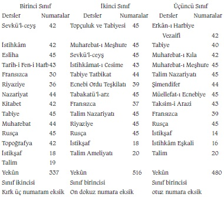
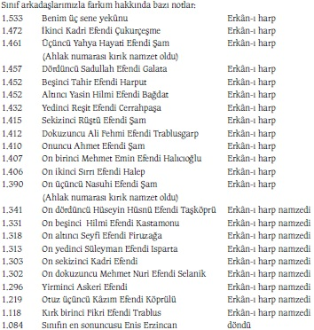
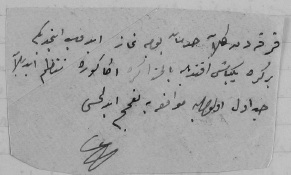

Erkân-ı Harbiye sınıflarındaki numaralarım

Fransızca ve riyaziyeden büyük haksızlığa maruz kaldım.
Bir iltimas hadisesi oldu.
Ben 1.533 numara ile Erkân-ı Harbiye birincisi oldum ki tam numaradan 90 numaram eksik. Sınıfın ikincisi 1.472 numara ile Kadri Efendi Çukurcuma oldu ki aramızda 61 numara gibi müthiş bir fark vardı ki bu fark ikinci ile erkân-ı harplerin sonuncusu arasındakine yakındı. Bunun şimdiye kadar görülmüş bir şey olmadığını söyleyerek bütün muallim ve sınıf zabitleri ve ders nazırları tarafından tebrik olundum. Bu müthiş fark dolayısıyla beni orduya göndermeyerek mektepte alıkoymak için mektep idaresi karar vermiş. Bana tebliğ ettiler. Kurada ikinci ordu (Edirne) çıkmıştı.
Sınıf arkadaşlarımızla farkım hakkında bazı notlar:

Sınıfımız 42 efendi idi. Sonunucusu ikmale kaldı. On üçü erkân-ı harbe ayrıldı. Fakat ahlak numarasından ayrılanların birkaçı da olamadı.
Üç senedir beraber çalıştığım Seyfi Efendi ile farkım 1.533-1.318=215.
İsim sırasıyla imtihana girdik, adaşımla Kâzım Köprülü (Özalp) olan farkım 1.533-1.219=314.
Son erkân-ı harple farkım: 1.533-1.390=143.
Ordulara ayrılmak için kurada ikinci ordu çıktı; fakat üçüncü ordu ya nakle muvaffak oldum. 9 Eylül 321 ’de erkân-ı harp birinciliğini kazandığımdan altın maarif madalyasıyla taltif olunmuştum. 23 Teşrinievvel 321 ’de diplomalarımızı aldık. Ders nazırı Esad Paşa tarafından büyük numara farkım ve ahlak numaram dolayısıyla aleni takdir olundum. Teşrinisani nihayetinde, Harbiye Nezareti ’nde erkân-ı harp arkadaşlarla erkân-ı harp dairesinde kura çektik. Hisseme ikinci Edirne ordusu çıktı. Çok meyus oldum. Emelim üçüncü ordu ydu. Arkadaşlardan iltimasla İstanbul ’da kalacaklar vardı. Aksi gibi onlar da üçüncü ordu yu çekmişlerdi. Bunlardan Sadullah Efendi, Galata İstanbul ’da kalmayı temin dahi etmişti.
Kendisine becayiş etmekliğimizi rica ettim. Bu samimi arkadaşım razı olmadı, yeisim arttı. Ben de erkân-ı harp yakasını takmaktan bir zevk duymamaya başladım. Sınıf zabiti üniformasıyla dolaşmaya başladım. Beni yeise düşüren mühim bir sebep de Makedonya için bazı mühim hadiselerin şu aralık temadisi idi. Kardeşim Hulusi Bey de jandarmaya geçmiş, Di Giorgi Paşa ’nın maiyetinde bulunmuş, Gevgili mıntıkasına memur imiş.
Benim behemehal üçüncü ordu ya gelmekliğimi yazıyordu. Vuku bulan hadise beş büyük devletin müşterek donanmalarının 26 Teşrinisani 1905 ’te on gemiden mürekkep, en kıdemli olan Avusturya amirali kumandasında Midilli Adası ’na gelmesi, gümrük ve telgrafhaneyi işgal etmesiydi. Almanya nümayişe iştirak etmemişti. 5 Kanunuevvel 1905 ’te Limni Adası ’nı da işgal ettiler. Bu işgaller İstanbul ’da duyuldu. Yalnız sebebi güya Galata rıhtımı hakkında Fransızlarla ihtilaftan dolayı imiş. Ve birkaç günde hallolduğundan çekilmiş diye şayia çıkarılıyordu.
Hakikati hariciyede akrabası olan arkadaşlardan öğrendim. Üçüncü ordu mıntıkasının bütçesinde açık varmış. Bâbıâli, gümrük yüzde sekiz on zammetmek istemiş. Büyük devletler de bu mıntıkanın maliyesine kontrolü, tevsiki teklif etmişler. Rus, Avusturya maliye memurlarına diğer büyük devletler de birer maliye memuru zammedecekler. Bu memurları tayin ve müfettişlik maiyetine göndermişler. Bâbıâli bu hali hukuk-ı hükümraniye muhalif bulmuş, Üsküp ’te teftiş ile meşgul bulunan Hüseyin Hilmi Paşa ’ya işbu memurları kabul etmemesini emretmiş. Büyük devletler de bunun üzerine bahri nümayiş yapmışlar. Bu vaziyet karşısında Abdülhamid korkmuş ve teklifi kabul etmiş.
18 Kanunuevvel 1905 ’te adaları boşaltarak çekilmiş, gümrüklerde yüzde 3 zam kabul olunmuş.
Memleketimizin bu yanan kısmını birer sene fasıla ile iki defa görmüş, pek benimsemiştim. Bütün varlığımı orada sarf etmeyi kendim için lüzumlu görüyordum. İkinci ordu bana bu geniş saha yanında dar bir oda gibi geliyordu. Sıkıntımdan her gün erkân-ı harp işaretsiz dolaşıyordum.
Jurnal olunmuşum. Kanunuevvel ’in haftasında gece yatsıdan sonra alaturka iki buçukta eve mektepten bir zabit geldi. Yarın erkenden mektepte müfettiş İsmail Paşa ’yı görmekliğim için bir emir tebliğ etti. Telaş eden ev halkını teskin ettim. Ertesi günü erkenden Harbiye Mektebi’ne gittim. Ders nazırı Esad Paşa ’nın odasında İsmail Paşa ’yı gördüm. Niçin erkân-ı harp alameti takmadan dolaştığımı sordu.
“Elbisem dar geldi tamire verdim de onun için” diye attım...
“Seni mektep idaresi mektep heyet-i tedriyesinde alıkoymak istiyor, ben de numara farkını takdirle gördüm. Tebrik ederim. Orduya gitmeyeceksin. Mektep idaresinin emrindesin.”
Başımdan kanımın sıcak sıcak aşağı çekildiğini hissediyorum. İkinci ordu yu beğenmezken başıma gelene bak!.. diye kısa düşündüm. Birden aklıma iyi bir cevap geldi, söyleyiverdim:
“Efendim, hakkımdaki teveccühlere teşekkür ederim. Ancak erkân-ı harp çıkanların kıtalarda iki sene staj görmesi irade-i seniyye icabıdır. Bu mukaddes iradeyi yapmak şerefinden mahrum kalmaklığım talihsizlik olur. Hususiyle muhtelif sınıflarda hizmet görmekle tecrübe kazanmış olacağım. Bugünkü halim çalışkan bir talebeden başka bir şey değildir. İki senelik hizmetimi ifa etmeden muallimlik etmek iktidarını kendimde bulmuyorum. Gösterilen kıymetli teveccühlerden bir istirhamım var: Bu stajı üçüncü ordu da görmekliğim için delalet buyrulmasıdır. Kurama ikinci ordu çıkmıştır.
İsmail Paşa: “Tuhaf şey... İstanbul ’da kalmak istemeyip de üçüncü ordu ya gitmeyi arzulamak neden ya?.. Ordu da hizmet İstanbul ’da dahi mümkündür. Bu üçüncü ordu da ne var acaba ki büyük arzu gösteriyorsun? Edirne ’ye, hatta İstanbul ’a bile tercih ediyorsun... Hiç böylesine de rast gelmemiştim.”
“Efendim, kardeşim o ordudadır. Annemizi de oraya götürerek senelerden beri ayrı vaziyetimizi ıslah etmektir. Başka bir düşüncem yoktur.”
Müfettiş Paşa biraz düşündükten sonra, “Üçüncü ordu dan buraya mektebe nakliniz belki kolay olmaz, bunun için stajınızı yakın bir yerde yapın” dedi.
“Mademki bendenize karşı teveccüh ve lütuf buyruluyor üçüncü ordu ya naklim suretiyle en büyük lütuf görmüş olacağım kanaatindeyim efendim...”
Sükûnet devam etti.. Bu adamı kızdırarak “defol” dedirtmekten başka çare aklıma gelmedi. Bir bahane de bulmuştum. Ben huzuruna askerce selam vererek girmiştim, ders nazırımız ise onu eteklemişti. Sükûtu şöylece bozdum: “Paşa hazretleri, bendeniz huzurunuza askerce bir selamla girdim. Halbuki mafevkim olan ders nazırımız eteklerinize vardılar. Bu bâbda terbiye-i askeriye kitabına bir sarahat yazılmasına emir buyrulursa yanlışlıkla teveccühten düşme tehlikesinden insan kurtulur.”
Bu sözlerim her iki paşayı da sapsarı yaptı.. Ve İsmail Paşa benim 3. Ordu ’ya naklim için Harbiye Nezareti’ne ve Erkân-ı Harbiye-i Umumi’ye yazılmasına karar verdiler.
Teşekkür ettim ve askerce bir selamla ayrıldım.
Bu ne muvaffakıyetti... İstanbul ’a lâyık olmayan bir adam mı zannolundum. Öyle ya ara sıra böyle şifahi veya tahriri tekliflere dayanılır mı?
Sevinçle mektebe uğradım. Herkes beni tenkit etti. Teveccühten düşmüşüm. Ayağa gelen nimet tepilir mi, dediler. Ders nazırı paşa da, “Sen ne yaptın! Aksi bir muameleye maruz kalacağından çok korktum” dedi.
Fakat iş uzuyordu. Kanunusani ’nin 10 ’unda emrimin çıktığını, ordulara tahrirat yazıldığını sevinçle öğrendim. Bu iş hemen bir ayda olmuştu. Bu müddet zarfında beni sıkı takip ve kontrol ediyorlardı. Ben bu müddet zarfında, Kılıcı Olmayana Baston İyi Bir Arkadaştır diyerek bir eser yazdım.
Esasını Fransızca, “bastonla müdafaa” diye bir eserden alarak genişletmiştim. Bir de Beyazıt Kütüphanesi ’nde tarihlerden çok istifade ettim. Fotoğraf da öğrenmiştim. Şuranın buranın resimlerini aldım, ara sıra musiki de dinledim.
Miladi 709 ’da, Elhamra ’yı, vesair Endülüs müesseselerini görmüş bir zattan da şifahi birçok malumat aldım. Endülüs tarihini de ibretle okudum. 91 Hicri senede Endülüs devleti kuruluyor. (Miladi 709 ’da.)
898 Hicri ’de inkıraz buluyor (1492). 1093 Hicri ’de son İslam kafilesi de Afrika ’ya göç ediyor. İspanyol süvarileri İslam kafilelerini denize dökmek için mızrakla takip ediyor. 106 sene kadar inşaatı devam eden Elhamra Sarayı, Kartaca Camii inşalarından 500 sene sonra elden çıkıyor. 800 senelik muazzam bir devletten eser kalmıyor. Birkaç saray ve cami... Bir sürü masal veya tarih... Bu acı sayfaları okurken halimizi göz önünden geçirdim. Herhalde böyle felâketli akıbeti bir gün göz önünden ayırmayarak vazifemi ifaya tekrar tekrar ahdettim.
İstanbul ’u alalı ve Balkanlar’a yerleşeli daha bu müddetin yarısı olmadı. Osmanlı Devleti ’nin teessüsü bile bu zamana nazaran hayli kısa. Müthiş, müthiş! İbret alınacak müthiş bir misal.
Artık İstanbul ’dan uzun zaman için ayrılacağımdan her tarafını ibretle geziyor, tetkik ediyorum. En fenama giden şey şimendifer memurları. Hepsi Türk ün gayri... Rumeli tarafı da böyle. Anadolu yakası da. 8 Kanunusani ’de Haydarpaşa ’dan trenle Feneryolu ’na, oradan da Fenerbahçe ’ye bir arkadaşımla gitmiştim. Moda ’daki Frère’ler Mektebi[*6] talebesi de burada oynuyorlar. Birkaçı ağaç diplerinde münferit ayakta bekliyor. Oyuna iştirak etmiyorlar. Cezalı imişler. Yüzlerce şapkalı talebe arasında iki fesli Türk çocuğu var. Diğerleri Rum, Ermeni, Yahudi mahlut... Çocuklarla konuştum. Şimendifer memurlarının çoğu buradan mezun imiş. Mükemmel Fransızca öğreniyorlar. Terbiye-i bedeniyeleri de kendilerine ciddi bir tavır ve hareket veriyor.
Şimendifer memurlarının ciddi ve muntazam hallerine gıpta ederken bizim vapur memurlarının laubali vaziyetleri insanı çok müteessir ediyor. Kadıköy ’e giderken mevki memuru sarhoştu. Arkadaşım Kadri Bey ’e denk gelmiş, “Bey, bana bir konyak ısmarla” demiş. Kadri Bey tanımadığı bu sarhoşa bir tokat vurmuş. Ben aşağıda kamarada idim. Gürültüyü işittim, çıktım. Hadiseye muttali oldum. Acıdım... Bu hale pek acıdım. Adamcağıza nasihat ettim. Hem kendine hem vazifeye acı arkadaş. Tokat ağır bir şeydir. Fakat senin yaptığın ve şu halin yalnız senin için değil hepimiz için bir yaradır. Eğer sarhoşluğu terk edersen bu tokada ebedi hürmet edersin, dedim. Sarhoşluk... Hem de vazifede sarhoşluk. Yarabbi, Türk e bu pis ahlakı neden mukadder kılıyorsun... Bizi de ikinci bir Endülüs yapmak için mi? Böyle ise; isyankârlardan biri de ben olurum.
En ferahlı ve zengini Beyazıt Kütüphanesi. Fakat ne berbat âdet: Kundura çıkartılıyor. Bu zorluğu yapmayınız diye memurlara söyledim. Temiz gördükleri bana müsait davranıyorlar; fakat devam eden o kadar az ki burası Sultan Hamid ’in saltanatı başlangıcı zamanlarında yapılmış. Sadrazam Said Paşa inşasına sebep olmuş, bu güzel... Fakat bahçemsi yerinde büyük bir ocak var, bu meraklı bir şey. Fazla kitapları yakmak içinmiş. İnsanlar gibi kitaplar da jurnal olunuyor ve insanlar gibi onlar da mahvediliyormuş... Kitap yakmak...[57]
Hay Allah belanızı versin. Kitap yakılır mı? Kitap jurnal edilir mi? Elden ele Mahkeme-i Kübra gibi müthiş eserleri bile okuyoruz. Men olunan şeye insanın haris olacağını olsun bilmiyorlar. Gizli dinleme ve gizli okumalar insanın ruh ve sinirlerini geriyor. Ve yapanlara karşı müthiş düşman yapıyor.
Köprülü ve Aşir Efendi kütüphaneleri ni de görmek istedim. Pazar günüydü, ikisi de kapalı. Saat alaturka gündüz beş. İki gün sonra saat yedi buçukta Köprülü Kütüphanesi ’ne gittim yine kapalı. Bu sefer parmaklık kapı hem de kilitli. Meydanda soracak kimse de yok.
Halk için bol ziyalı, girip çıkması kolay, bol kitaplı kütüphane İstanbul ’da bile yok. Manastır ve Selanik ’te fenası bile yoktu. Ne yazık...
Beyazıt ’ta bir kıraat salonu vardı. Eski gazete kolleksiyonlarını bir yerde bulamamıştım, burada dahi yok. Yalnız Servet-i Fünun kolleksiyonu buldum. Mühim hadiseler hakkında not almak istiyordum, bundan hayli istifade ettim. Fakat ne yazık ki evvelce daha zengin münderecatlı imiş. Sıhhi, iktisadi, fenni, ilmi bahisler milli romanlar ne kadar güzel, şimdi ise riya ve yalan dolu.
İsmi kıraathane olan birçok yerler var. Bunlar Selanik ’te ve Manastır ’da hayli yekûnda. Fakat günün gazetelerinden başka bir şey bulmak büyük bahtiyarlık. İstibdat, sana bin lanet. Fikirleri paslandırmak için ne mümkünse yapıyorsun.
Küçükken birkaç defa dinlemiştim. Giderayak bir defa daha dinleyerek bir fikir edinmek istedim. Şehzadebaşı ’nda Komik Hasan Efendi bazı arkadaşlarıyla bir gazino işletiyor, Meddah Süruri varmış, güzel taklitlerle halka neşe veren bu sanattan tarih ve coğrafyamız ve diğer faydalı hususlar için ne büyük istifadeler mümkün. Yazık ki sözler basit. Taklitlerin birbirine eklenmesinden ibaret.
Acıklı bir hal. Ufak ufak kutu gibi dükkânlar. Bu zayıf ve cılız varlıklar ruha kuvvet vermiyor. İnsanı cezbetmiyor. Kitap varlığı da acıklı. Çoğu mektep kitabı ve roman. Hele sahaflar dini kitaplar veya terekelerden toplama eski püskü şeyler... Bu kitapçıların yarısı da Acem. Satılan kitaplar Mısır ’dan, şuradan buradan gelen taassup mahsulü şeyler olduğu gibi, milli haysiyetimize dokunacak ecnebi kitaplar da var.
Abdülhamid, gazetelere, matbuata sansür koymuş; fakat bu yaymacılar her lüzumlu kontrolden bile mahrum. Resimleri İstanbul ’a ait olduğundan merak ederek La Porte de félicité isimli Fransızca bir kitap aldım. Okuyup iade etmek üzere geceliği yirmi para. Kitabın fiyatını da iadesinde almak üzere verdim. Okudukça sinirlendim. Milletimizin şeref ve namusuna karşı sürülmüş lekeler. Yırttım attım! Böyle pis şeylerin yaymacı halindeki kitapçılarda satılmasından gafil hükümet. Sonra ecnebilere karşı bu sergilerin görünüşü ilme karşı hürmetsizlik değil ona karşı hakaret, isyan...
Halka büyük sıkıntı veren bir yer. Birkaç pencere üstünde “adi mektup” levhası olmasına rağmen kimisi kapalı, kimisi de açık olduğu halde memur sandalyesi duvara yatırılmış, sahibinin yok olduğunu gösteriyor.
Tek bir pencere önünde yetim ve mütekait maaşı yeri gibi halk birikmiş. İtişe kakışa mektup vereceksin. Sonra o kalabalıktan kurtulmak için çabalayacaksın... Memur işe kâfi gelmeyince dünyanın her yerinde memurlar çoğaltılır. Zavallı halk, parasıyla ceza görüyor. Kimse ağzını açıp bir şey söylemiyor. Fakat kime ne söyleyecek. İşin ruhu bozuk, temeli çürük. Sonra mevrude damgaları da vakitsiz vuruluyor. Edirne ’den bir arkadaşım kartpostal ile üç adres yazmış. Bunların şimşir üzerine hakkettirilerek gönderilmesini rica etmiş. Mevrude damgası ile sanki mahsus adreslerin ikisini battal etmişler. Bu münasebetsizliğe çıkıştım, şikâyet ettim. Fakat ne fayda... Tekrar Edirne ’ye sordum, arkadaşım Cisrimustafapaşa ’ya gitmiş, mektup geri geldi. Haftalar geçti, iş de yapılamadı. Gelen kartlarımda bu münasebetsizlik devamda... Acaba sansür olsun diye mi bu işi mahsus yapıyorlar?
Orduya gitmeden evvel fakirlere bir koyun kesmek istedim. Mahallemizdeki fakir komşularımıza elimizden geldiği kadar öteden beri yardım ederiz. Bu hayrı beni tanımayan bir muhitte yapmak istedim.
Aklıma Eyüp Sultan ’ı ziyaret etmek geldi, bir cuma günü gittim. Cuma namazını 17 sene kadar evvel pek küçük iken dayım Şükrü Bey ile (Japon Denizi ’nde Ertuğrul ’da boğulan) kıldığım minberin sağını hatırladım. Ben o zaman sağıma soluma bakarak onu taklit ediyordum. Namaz uzun sürünce oturuvermiştim. O namazını bitirince, “O, sen ne çabuk kıldın. Namazın bitti mi?” demiş, ben de, “Bitti” demiştim.
Bugün hep o sevgili dayımı ve onun yanındaki küçücük Kâzım ’ı hatırladım. Onu Japon Denizi yuttu, yanındaki küçük şimdi genç bir erkân-ı harp. Vatan ve millet aşkıyla titriyor...
Hutbe okunurken uyuklayan, esneyen hemen bütün cemaat... Güzel sözleri anlıyorum, ne yazık bari Arapça yı akabinde Türkçe ye de tercüme etseler ne olur... Hem ayet-i kerime ve hadis-i şerifler tercüme edilmiş; fakat esas hutbe neden Türkçe olmasın. Fakat kahrolası istibdat! Âciz ve riyakâr. Bir toplantı rahat yaşasın diye milletin uyuması lâzım. Mademki hutbe okunurken halk uyuyor, o murdar idare için bundan muvaffakıyetli ne olur... Kulaklara sansür.
Bir sınıf arkadaşıma rast geldim. “Nerde kurban kessem iyi olur? Maksadım fakirlere ufacık bir yardımdır. Orduya gitmeden böyle bir şey yapmak aklıma geldi. Mahallemde yapmak istemedim. Gösteriş gibi olmasın diye...”
Arkadaşım: “Burada kurban iki yerde kesilir. Ya tekkede ya mezarlıkta...”
Ben: “Tekkeler tembellerle dolu. Ben, çalışan fakirlere yardım etmek istiyorum...”
“Mezarlıklar da çingenelerle doludur, o halde vazgeç burada kesmekten” dedi.
“Mümkün değil mi, en fakir mahalleye gidelim ve orada bu hayrı yapalım...”
“Tehlikeli olur. Ne maksatla diye hafiyeler etrafımızı alır...”
“Hay Allah yakında belalarını versin de bu maskaraların, şu halde başka yerde başka bir suretle bu hayrı yaparım.”
Eyüp ’ten dönüşte vapurda sokak köpekleri de vardı. Nasılsa vapura da girmişler. Medeni cihanda başıboş köpek olmadığını işitiyoruz. Bizim memlekette henüz insan şeklindeki köpekler bile yaşıyor! Bunlarsa halis köpek...
Feshane fabrikası, tersane binaları hesaba katılmazsa facia... Bulgar Kilisesi azametle kurulmuş. Karşılıklı ihtiyar ahşap evler. Bir bir süprüntü yığıntıları... Beyoğlu ile Kasımpaşa hududu ibret alınacak bir manzara. Avrupa ile bizim yan yana duruşumuz gibi. Yüksek binalar, medeni simalar birden bitiyor, köhne barakalar yerlere geçiyor gibi aşağı iniyor ve çömeliyor.
İstanbul cihetindeki muazzam camiler ve minareler ahşap çöküntüler içinde bir iskeletin beyaz dişleri gibi... Bunlar gerçi aynı zamanda bir zafer heykeli. Fakat bu masraf acaba milletin başka varlığına da sarf edilse ne olurdu?
Anadolu, vatanın esas temeli yolsuz, köprüsüz ve sağlam binasız. Şu İstanbul ’un içi bile ne bakımsız. Mezarlıkların hali yüzkarası. Hele mezarlar arasında ve kenarlarında surlar üzerinde paslı gaz tenekeleriyle kaplı olan ve hiçbirinde hendesi bir doğrultu bulunmayan barakalar nedir?.. Bunların içinden çıkacak insanların ruhu, duygusu ne olabilir?
Mezarların nakli, arsaların koru ve bahçe haline konulması, bu mezarlardan daha bahtsız kulübelerin yıktırılarak fakirler için birkaç insanca bina yapmak güç bir şey midir? Ahşap köhne binaların da belediyece satın alınarak her semtte geniş bahçeler yapmak hem yangınlar için hem de sıhhat ve neşe için ne kadar faydalı...
Cami üstüne cami... Saray üstüne saray... Asırlarca bu riyakârlık devam etmiş. Hâlâ da böyle gidiyor. Bir padişah için birçok saray ve birçok bahçe ve eğlence yeri. Sonra milyonla halk için bir şey düşünme. Vaktiyle medeniyete giriyoruz diye Haliç ’te, Göksular daki sarfiyat da hep padişah ve riyakâr günahkar muhiti için...
Dün böyle geçmiş. Bugün de böyle. Ah yarın olsun şu memleketin evvela havası bu riyakâr ve yalandan temiz saf bir havayla dolsa.
Erkân-ı harp sınıflarında buraya her hafta giderdim. Şu günlerde de birkaç defa gittim. Bütün gelenler Türk ün gayri. Hele mürebbiyelerin arabalarda çocuk gezdirmeleri çok hoş. Neden bu bahçeler İstanbul tarafında da yapılmıyor? Sarayburnu Sarayları her yerde olduğu gibi halka verilmiyor. Orada “vatan gölü” diye bir park yapılmıyor. Vatan sözü yasak olan bir memlekette ben de neler düşünüyorum...
Fakat yarın bu olmayacak mı? Bunları herhalde göreceğiz. Şu yangın yerlerinde dediğim gibi semt semt ne güzel bahçeler yapılabilir.
Parklardan evvel şu pis yerlere de bir çare bulunsa. Mümkün olsa da Abdülhamid ’i Yeni Cami helâlarına getirseler... 14 Kanunusani ’de gördüğüm iki manzara yürekler acısıdır.
Beyoğlu ’nda teyzemin oğlu ressam Hüsnü Bey ’e gitmiştim. Dönüşte Ada İskelesi’ndeki gazinoda bir çay içtim. Dubanın biri değiştiriliyordu. Duba ağırlıktan kurtulunca yükseldi, etrafı midye dolu... Herkes kapış kapış toplamaya başladı. Bu tabii bir hal. Fakat üniformalı bir memur halkın anasına babasına, hatta büyük ana ve babasına açtı ağzını... Zavallılardan kimse ses çıkarmıyor. Ve dayak korkusundan kaçışıyorlar.
Bu hali bir donanma gecesi Sultan Sarayları önünde haremağalarının küfürlerle salladığı kamçılardan kaçanlarda da görmüştüm. O zaman kazara kamçı yiyen bir zabit, “Arap oğlu, senin şimdi kafanı kaz gibi kopartırım” demiş ve haremağası af dileyerek zabitin ellerine sarılmıştı.
Bugün bu yüzlerce halka bir adam söylemediğini bırakmıyordu... O güçlü kuvvetli hamallar bile hayran hayran bakıyorlardı. Kuvvet evvela kafada ve kalpte lâzım olduğuna ne güzel misal... Ben bu sert memura yanlış yaptığını anlattım. “Halkın memnun olmasına çalışmak insanın vicdanına zevk verir arkadaş” dedim. Halkın vergisiyle hayatını geçindiren memurlar neden onları küçük görür de onlara kumanda ve hakaret eder? Bir hamal bile çektiği ıstırabın karşılığı olan ücretinden vergi veriyor. Ve bunlar toplanıp maaş oluyor.
Bu can sıkıcı manzaradan sonra gördüğüm daha acıdır. Evet mümkün olsa da Sultan Hamid ’i veya Şehremini’ni şu Yeni Cami helâsındaki manzaraya şahit edebilsem...
Ben helâdan çıkarken zavallı bir Türk hanımını sıkışmış, buraya gelmek zaruriyetinde kalmış olduğunu gördüm. Herkes gözünü biçareye dikmiş. Sanki bir cürm-i meşhud seyrediyorlar. Kadıncağız utancından şaşkın bir halde sendeliyor... Bakanlara ayıp yaptıklarını söylemesem, gelen giden birikecek. Def-i hacet için bir hanımın erkekler abdesthanesine gitmesini seyredecekler veya men edecekler.
Ne rezalet bu! Halktan mütemadi para alan hükümet, belediyeler bu ihtiyacı neden görmezler? Bu işlek yerlere hanımlar için birer hela yapmazlar?
Ne devirde yaşıyoruz Yarabbi. Bir gün Sultanahmet ’te annemle bir faytona binmek isteyişimize arabacı, “Efendim erkekle kadının bir arabaya binmelerini yasak ettirdiler.” demişti. Ben de, “Bu benim annem. Sen bile anlarsın. Allah belasını versin böyle hayvanca emir verenlerin” diyerek zorla binmiştim.
Bugün bir Türk hanımının erkekler abdesthanesine gelmesi herhalde daha büyük bir cürümdü. Acaba polis gelir de bu hanıma hakaret eder mi diye, hanım selamete çıkıncaya kadar uzaktan gözetlemek mecburiyetinde kaldım.
Şu üçüncü ordu ya bir belaya çatmadan kapağı bir atsaydım. Köprübaşı ’nda, Yeni Canlı gibi muazzam bir abidenin etrafı acıklı bir hal. Güzel bir meydan haline konsa. Ne latif ve ne azametli bir yer olur...
Bir gün o dar kemerin altından geçerken alabildiğine gelen bir araba karşısında zavallı bir hanım şaşırdı. Geri dönüp kaçmaya karar verdi. Korkudan titriyor. Araba az kaldı ezecek... Derhal arabanın önüne atıldım. Arabacı zabit olduğumu görünce dizginleri topladı.
Karşılıklı arabacılar birbirlerine çarpmamak için duvar kenarlarına arabalarını yanaştırırlar. Çoluk çocuk ne tehlikeli vaziyet... Kim bilir burada ne kazalar oluyor. Gelen giden için ayrı yollar yapmak hatıra gelmiyor. Yahut kenarlarda galeriler açmak da kabil. En iyisi etraftaki münasebetsiz binalar açılsa da Beyazıt tarafına gidenler Cami ’nin Mısır Çarşısı cihetinden geçseler ne güzel olur. Fakat istibdad-ı idarede halk için güzel ve kolay şeyler yasak!
Zabit ve memurların tekaüdiyelerinden kesilen yüzdelerinden binlerce lira toplanmış. Maaş vermek kolaymış; fakat bir gün Abdülhamid ’e para lâzım olmuş, bunu da verivermişler. Şimdi birçok maaşlar da tedahülde kalıyor. Benim yetim maaşım altı sene evvel kesildiği halde kalan maaşlarımı kurtaramıyorum. Ara sıra bin bir zorlukla beş on kuruş kurtarmak mümkün oluyor.
Tekaüd Sandığı’na iki paşa da memur edilmiş. Orduya girecekken hesabımın temizlenmesini rica ettim. “Bugün git, yarın gel” diye usulen birkaç gün oynattılar. Baktım iyilikle olmuyor, müthiş bir aksilik ettim. Resmi üniformamı, maarif nişanımı ve eldivenimi, tam tertip yaparak paşaların odasına girdim.
Paramı almadan bu odadan çıkmayacağımı kat i bir dille söyledim. Paşalar şaşırdı, maaşlarımı kâmilen almaya muvaffak oldum.
O dul kadınlar, yetim çocuklar her gün bağırıp çağırırlar, yalvarırlar. Ne feci sahne...
Topçuluk ve Osmanlı muharebatı muallimi Muhtar Paşa üçüncü ordu ya gideceğimi haber almış. Çağırttı ve bir tavsiye yazayım, zekâ ve kabiliyetlerinizi oradaki bildiklerime bildirmek için iyi olur. Gerçi az zamanda varlığınızı anlatabilirsiniz; fakat zorluk çekmeden takdim olunmak daha muvafık olur, dedi.
Dedim: “Paşa hazretleri çok teşekkür ederim. Kıymetli teveccühlerinizi daima iftiharla anarım. Ancak bir tavsiye almak ya sizin için veyahut benim için acı bir şey olabilir. Eğer tavsiyenize lâyık olamazsam, siz mahcup olursunuz. Eğer lâyık olursam tavsiye diye benim için acı olur... Bırakın kendi irfan ve seciyem ile kendi lâyık olabileceğim yeri kendim tutmuş olayım.”
“Sözlerin her takdire lâyıktır. Ancak arkadaşlarının çoğu şuradan buradan tavsiye ile gidiyor. Öteden beri âdettir. Sen kendini anlatıncaya kadar hale göre az çok zaman geçer. Tavsiyeden maksat seni olduğun gibi ordu erkân-ı harbiyesine anlatmaktır. Bu iltimas demek değildir. Ve esasen de iltimasa ihtiyacın yok.”
“Çok teşekkür ederim efendim. Senelerce tahsilimi sırf kendi emeğim ile yaptığım malum-ı âlinizdir. Orduda da ne pahasına olursa olsun kendimi ancak kendimle tanıtmak için büyük bir arzum vardır. Lütfunuza tekrar tekrar teşekkür ederim. Hayatta mücadelenin bir zevk olduğunu kabul edenlerdenim. Kusurumu af buyurun...”
Paşa, büyük samimiyetle dualar etti. Esasen İstanbul ’da bırakılmak lütfunu reddetmiş, dik kafalı bir insan diye herkes dudak büküyordu. Bu vaziyette hakkımdaki bu kabil teveccühleri iki kat arttı.
Artık hareket günlerim yaklaşıyordu. Son ziyaretlerden olmak üzere resmini gördüğüm Ayastefanos ’taki son mağlubiyetimizin bağrımıza diktiği abideyi görmek vatan ve milletimizin istiklâl ve hürriyeti uğrunda bütün kudret ve kabiliyetimle uğraşacağım hakkındaki ahdimi bir de düşman abidesi önünde vermek için Ayastefanos ’a gittim.
Yaya olarak oraya gittim. Etraf duvarı kale bendi tarzında, köşeler burç gibi... Kanunusani ’nin 24 ’ü (Efrenci 6 Şubat) olmasına rağmen hava yaz gibiydi. On adım kala kendimi tutamadım, hücum yürüyüşüne geçtim ve duvarını tekmeledim, tükürdüm ve haykırdım: Seni mutlaka yıkacağız! İnşallah seni yapanları da beraber...
14 kilometre kadar gidip gelme yaya yürüdüm. Büyük bir zevkle eve döndüm.
Nihayet bir iki günlük olan nakil işinin çok uzamasından endişe etmeye başlayarak merkez kumandanlığında tanıdığım bir zabit vasıtasıyla anladım ki gerek kardeşim gerekse ben ve ailemiz hakkında uzun uzadıya tahkikat yapılmış.
Bir maksad-ı mahsusum olmadığına kanaat gelince muamele yapılmış. Bu beni düşündürdü. Acaba takip devam edecek mi?
Kendi elimle mimlendim mi? Tedabir-i ihtiyatiye olarak kitap sandığımı bir daha kontrol ettim ve Po Adaları ’nın Tarihi diye Fransızca eseri ve yaptığım tercümeyi yırttım. Baştan aşağı Bizans imparatorlarının hırs ve şehvetleri uğruna oralarda yaptırdıkları cinayetleri tasvir ediyor. Issız ada, hayırsız ada birer maktel. Birçok masum insanın gözlerine mil çekilerek kıymetli eşyaları ve güzel hemşire ve karıları saray tarafından alınmış. Facialar başka tarzda aynen devam edip gitmekte... Tıpkı Bizans İmparatorluğu zulüm ve şehvetinde devamda... Her cinayatın yanına kırmızı çizgiler çizip, “Dikkat, ibret!” diye yazmıştım.
Hayli emeğimi teessürle mahvetmek lüzumunu hissettim. Çünkü üçüncü ordu ya ben de bir kıvılcım olarak gidiyordum. Gitmeden sönmemeliydim. Bütün genç ve münevver ruhlarda hürriyete karşı bilhassa o muhitte iki senedir büyük bir susayış görmüştüm. Orası bu susuzluktan yanmaya başlamıştı.
Makedonya yangınından Edirne mıntıkasına da alevler sıçrıyordu. Bütün vatan yanabilecek, millet parça parça büyük-küçük devletler ayağı altında ezilecekti. Bu şüphesiz akıbeti ben uzaktan görmüyordum. Zan ve tahmin değil, yakından görmek, içinden görmekti. Gözümle Selanik ’te, Manastır ’da bu akıbeti görmüştüm. Her unsur müthiş birlikler yapmıştı. Biz Türklerin ordu içinde bile birlik ve ahengi yoktu. Yalnız genç zabitlerin kalpleri ve dimağları yanıyor, bu kadar...
Selanik ’te kalmamak... İmkân bulup Manastır ’a yerleşmek. Ve her hale karşı kuvvetli bir zabitan birliği hazırlamak. Bir tehlike karşısında İttihat ve Terakki namına bu grupla icraata geçmek. Fakat askeri zapturapta ve vazifeye bütün kuvvetimle sarılmak ve onu muhafaza ettirmek...
Bu fikrimi ağabeyim Hamdi Bey de muvafık buldu ve bana şunları tavsiye etti: “İttihat ve Terakki Cemiyeti’nin evvelce İstanbul ’da bütün kuvvetini toplamakla büyük hata ettiği anlaşıldı. İkincisi mektep çocuklarına kadar teşkilatın teşmili bir gaflet olmuştur. Söz ayağa düştü. Sultan Hamid işi tamamıyla öğrendi. İşin kendisini hal ’e gideceğini öğrenince Cemiyet’i tamamıyla mahvetti. Fizan ’a giden birçok mektepliler, Marmara ’ya atılan birçok münevverler vardı. Netice, felâket oldu. Abdülhamid hal olunacaksa bunun için mahkeme-i kübralar yazıp, çoluk çocuğa kadar okutmakta ne manalar vardı. Fikrini, tamamıyla doğru buluyorum. İşi ancak ordu yapar. Halktan bir şey beklememelidir. Üçüncü ordu da her unsur ihtilâl halinde olduğuna nazaran iş daha kolay olmakla beraber müthiş bir hafiye teşkilatının oralarda dahi mevcut olduğunu unutma... Teşkilat uzun zaman gizli kalamaz. Adet çoğaldıkça, haber alma tehlikesi de çoğalacaktır. Bir muvaffakıyet elde etmeden bir teşebbüs daha mahvolursa artık hiçbir ümit kalmaz. Bu da ayrı düşünülecek bir meseledir.”
Ben: “İcraat zamanında İstanbul ’dan bir ümit beklenemez mi? Teşkilatta kimler kaldı?”
“Birkaç kişiyi tanıyorum. Fakat bir iş yapacak kudret yoktur.”
“Şu halde memleketin tehlikeli vaziyetiyle teşebbüsü daima göz önünde tutarak yürümek lâzımdır. Allah milletin yardımcısı olsun. Yalnız bana bir teşvik ve kudret kaynağı olmak üzere senin İttihat ve Terakki Cemiyeti ’ndeki 121/11 numaran benim olsa da bu cemiyetin bir mensubu gayretiyle çalışsam nasıl olur. Bu ailemizin hürriyet yadigârı ve parolası olsun.”
“Peki mübarek olsun. Allah ’tan sana sıhhat ve muvaffakıyet dilerim kardeşim.”
6 Şubat (19 Şubat 1906) Pazartesi günü anneme, kardeşlerime ve hısım akrabama veda ile tren ile yola çıktım. Sirkeci ’de kanunlar eşyamın muayene olunacağını söylediler ve deniz tarafında bir yere götürdüler.
Orada Mekke şerifi kıyafetli, biri yaşlı biri de genç iki Arap, eşyamı muayeneye memur olduklarını söylediler. Emirlerine amade birtakım herifler de var. Pis suratlarından hafiye oldukları belli...
Kızdım, dedim ki: “Siz kimsiniz de bir erkân-ı harp zabitinin eşyasını ne diye arayacaksınız?”
Herifler Mekke delili şivesiyle, vazifeleri olduğunu, münakaşa etmemekliğimin hakkımda hayırlı olacağını söylediler.
Kulağıma gelen fısıltılardan bunların Arap İzzet ’in adamları olduğunu anladım. Allah hepinizin belasını versin dedim içimden...
Eşyamı aradılar. Kitaplarımı didiklediler, Reşid Paşa ’nın hatıralarını aldılar. Bu kitap yasak, bunu alacağız dediler. Bizans zulmetini hem de elimle yazdığım tercümelerini yaktığıma memnun oldum. Fakat İstanbul ’daki Türkçe basılmış olan ve çoktan da ölmüş bulunan bir insanın hatıratını ne diye alacaklardı? Bunu isterlerse bir jurnalle münasebetsiz zeminde yapmazlar mı acaba diye düşündüm. Çekişmeye başladım: “Vermem bunları, bunlar bana lâzımdır. İstanbul ’da basılmış Türkçe bir eseri neden alıyorsunuz?” dedim.
Laf anlatamayacağımı görünce Arapça ya çevirerek, “Türkçe derdimi anlatamadım galiba. Sizi bu kitabın mukaddimesi korkuttu galiba... Çünkü yalnız onu okudunuz. İşte ben de onu yırtıyorum. Kitaplarımı yeni aldım, okuyacağım. Onları bana bırakın” dedim.
Araplar şaşırdı ve gevşedi. Mukaddeme sayfalarını gözleri önünde parça parça ettim, kitapları da sandığa tıktım. Araplar birbirleriyle bir şeyler görüştü. Artık ısrar etmediler. Ben de ellerinden ucuz kurtuldum. Fakat aklıma geldikçe kendilerine de, efendilerine de lanet okuyorum.
Kompartımanımda Selanik ’e kadar şüpheli bir Yahudi genci beraber gitti. Musiki ve fotoğrafa vukufundan dem vurmasına rağmen ikisinden de haberi yok. Yollarda sınıf arkadaşlarıma rast gelerek kıtaları ve mıntıkaları hakkında malumat aldım. Şimendifer güzergâhında bu sene daha çok asker var, hem de cüz-i tamlar dağıtılmış. Talim ve terbiye sıfır. Basit bir terbiye-i münferide görüyorlar. Bölük talimi bile yapamıyorlar. Ateş talimleri de yokmuş. Zabitler bile mavzerle tek kurşun atmamışlar.
Vaziyete gelince herkesin kulağı kirişte. Güzergâh kâmilen Bulgar, kısmen de Rum. Berlin Muahedesi mucibince muhacirlerimizin Anadolu ’ya gitmeleri şart olduğundan hat boylarına Türk de yerleştirilemiyormuş. Birçok bataklık yerlerdeki askerlerimiz hasta ve perişan olmuşlar.
Ertesi günü kardeşim Hulusi Bey Selanik ’e yakın Gilindir ’den bana mülâki oldu. Selanik ’te de sınıf arkadaşlarım karşıladılar.
8 Şubat (21 Şubat 1906) Çarşamba günü Beyaz Kule ’de ordu erkân-ı harbiyesini ziyaret ettim. Erkân-ı harbiye reisi yokmuş. Yarın gel dediler emrimi bıraktım.
Sınıf arkadaşlarımla Kristal ’de toplandık. Adeta bir mektep açtık. Bana başçavuş diye hitap ediyorlar ve mektep hayatımızı yâd ediyorlardı. Selanik ’te kaldığım müddetçe bu içtimaları yapmaya karar verdik. Selanik ’te bir fark olarak 17. Nişancı Taburu nun kumandanının da mektepli olduğunu görerek sevindim. Geçen sene alaylı bir ümmi idi. Bir senede nişancıya mektepli kumandan gelmiş, ne terakki...
9 Şubat ’ta tekrar ordu erkân-ı harbiyesine gittim. Reis Hasan Paşa sert bir zat. Beni oturtmadı bile. Sordu: “Tavsiye getirdin mi?”
“Hayır efendim... Böyle bir şey almayı küçüklük telakki edenlerdenim.”
“Ya... Nereyi istiyorsun? Selanik ’te kalmak ister misin?”
Ben: “Benim için her şey müsavidir. Emrinize muntazırım.”
Reis kızdı ve bağırıp elini masaya vurarak, “O halde yarınki trenle Manastır ’a” dedi. Sağ tarafında oturan bir zat, “Paşa hazretleri rica ederim. Hiddet buyurdunuz. Ordu ya yeni geliyorlar. Belki Selanik ’te bazı işleri olur. Birkaç gün müsaade buyurun.”
Bu zat ikinci reis Ali Rıza Paşa imiş.
Reis: “Nasıl hiddet etmeyeyim. Baksana cevaba. Mademki o kadar ciddi askermiş yarın Manastır ’a gider.”
Ben: “Emrimi lütuf buyurursanız benim burada görecek işim yoktur.”
Halbuki İstanbul ’dan daha yeni eşyam gelmemişti. Reis sükûnete geldi: Üç gün Selanik ’te mezunsunuz, Üçüncü günü emrinizi alır, dördüncü günü sabahleyin Manastır ’a gidersiniz.”
Ben, “Teşekkür ederim efendim” dedim, sert bir selamla çıktım. Bu nasıl ordu erkân-ı harbiyesi diye düşünmekle beraber Manastır ’a gitmeye dayanan bu çekişme de hoşuma gitti. Tavsiye... Tavsiye... Ne felâket! Tevekkeli değil Muhtar Paşa bunu teklif etmişti. Demek usulmüş. Ordu erkân-ı harbiyesi benim diplomamı görmek zahmetini ihtiyar etmemişti. Beni karşılarında oturtmamışlardı bile. Tavsiyeli olunursa izzet ikram yapılır, istenilen yerde kalınırmış. İyi yaptım, ben tavsiyesiz istediğim yere gidiyorum.
Tanıdıklarımdan ve arkadaşlarımdan ahvâl hakkında yalnız dinledim. Komitelerden müsadere olunan evrak hakkında malumat aldım. Bulgarlar ın armasını gördüm. Bizim bayrak kırılmış, yere atmışlar. Aralarındaki hususi işareti gördüm. Tamimleri okudum. Jandarma mektepleri, hakkında müfettişlik hakkında hayli malumat edindim. Selanik Apokiriye (Maskara Bayramı) gününü de gördüm.
Türk ün gayri anasır Avrupalılar gibi şenlikler yapıyor. Hava yağmurlu olmasına rağmen büyük bir hayat gösteriyorlardı. Büyük bir donanma günü gibi tesid ettiler.
Eşyamı da bugün aldım. Burada arayan olmadı. Artık hür hava kokluyordum ve yarın da hürriyet beşiği başına hareket edeceğim.
13 Şubat (26 Şubat 1906) Pazartesi gayet güzel bir havada istasyona geldim. Kardeşim Hulusi Bey saat 1 ’de (alaturka), ben de iki buçukta hareket ettim. Kompartımanımda bir Rum zenginiyle bir Bulgar papazı vardı. Rum güzel Fransızca, Bulgar da Rusça biliyordu. Her ikisiyle Fransızca ve Rusça görüştüm. Rum un elinde Matin gazetesi vardı. Selahattin imzalı bir makaleyi gösterdi ve pek beğendiğini söyledi. Cin fikirli biri.
Makale:
“Avrupa medenileri Bulgar, Rum, Ermeni ilh... milletlerin Türklerden zulüm görmekte olduklarından feryat edip duruyorlar. Ve envai mezalimi Türklere reva görüyorlar. Halbuki felâkete sebep onlardır. Sanki Türkler diğer milletlerden daha mı bahtiyardır? Avrupalıların ve Hıristiyan tebaanın zulmü yetişmiyormuş gibi padişahın zulmünden de en çok ezilen onlardır. Türkler, Hıristiyanlar kadar bile hürriyetlerine mazhar değildir.”
Bulgar papaz çabuk indi. Bu Rum münevveriyle hayli görüştük. Bulgarların, Makedonya emellerine karşı onların da Türkler kadar alâkadar olduğu görülüyor. Fakat Rum çetelerinin faaliyetine karşı yutkunuyor... Açık görülüyor ki son asırların çok telaffuz ettiği Türkiye inhilâline karşı, meydanı yalnız Bulgarlar a bırakmamak için çalışıyorlar. Kan döküyorlar. İki sene evvel tanıdığım bu latif güzergâhı büyük bir sevinçle seyrederek Manastır ’a varıyorum.
13 Şubat 321 (26 Şubat 1906) Pazartesi akşamı (3 Muharrem 1323) Manastır ’a vardım. İçimde o kadar büyük bir sevinç var ki mislini hayatımda şimdiye kadar pek az duydum. İstanbul ’un pek sıkıcı havasından pek uzaklara geldim, ondan mı? Hayatla mücadeleye başladığım için mi? Vatan ve millete burda en büyük hizmet görme imkânını bulduğumdan mı? Galiba hepsi müessir...
Aile efradımı istediğim veya onların arzu ettiği gün getirme imkânı olduğundan mı nedir, bu husus hiç aksi tesir yapmıyor. Manastır ’da iki sene evvel beş on gün kaldığım halde yıllarca burada yaşamışım gibi bildik geliyor. Yollarda ve burada sınıf arkadaşlarıma rast gelmek pek zevkli.
Geceyi belediye otelinde geçirdim. 14 Şubat ordu kumandanlığı ve erkân-ı harbiyesine arzı mevcudiyete gittim.
Ordunun iki merkezi var: Selanik ve Manastır. Ordu kumandanı, erkân-ı harbiye reisi Selanik ’te. Vekilleri ve erkân-ı harbiye şubeleri, levazım heyeti Manastır ’da. Güya bunlar da Selanik ’e giderlerse Manastır tahliye olunuyor diye halkta vaktiyle bir his hasıl olarak padişaha müracaatlı bu şeklin hasıl olmasına sebep olmuşlar.
Selanik ’teki müşiri Hayri Paşa ’ya çıkmak âdet olmadığından, yani kendisi istemediğinden, ordu erkân-ı harbiye reisinin iltifatlarına mazhar olmuştum. Buradaki usulü sordum, kumandan vekili Nazif Paşa kabul ederlermiş.
14 Şubat Salı [27 Şubat 1906][58]
Üçüncü Ordu’da vazifeye başlayacağım gün olmak dolayısıyla hayatımda bir dönüm noktasıdır. Resmi üniforma gündelik değil, eldiven ve mahmuzlu. Şık bir kıyafetle Drahor boyundaki daireye gittim. Ordu kumandan vekili Nazif Paşa ’nın odasına haber verdikten sonra girdim. Masasının bir adım açığında bir mahmuz şaklatmasıyla hazırol vaziyetinde keskin bir selamla, orduyu âlilerinde vazife almak şerefiyle gelen erkân-ı harbiye yüzbaşısı Zeyrekli Kâzım, dedim.
Yan tarafında oturan uzun kır sakallı bir süvari feriki –İbrahim Paşa olduğunu sonradan öğrendim–, “Yavaş, Alman erkân-ı harbi! Ortalığı yıkacaksın! O ne mahmuz şaklatması, o ne ciddiyet” demesin mi...
Nazif Paşa da kıs kıs gülmesin mi... İkisi de yetmişlik olan bu ihtiyar kumandanlar karşısında vazifeyi iyi ifa etmek için almış olduğum vaziyetin devamına imkân kalmadı. Ellerim, ayaklarım sanki benden ayrıldı ve başıbozuk gibi sallandı durdu.
Kumandanlar benimle alaylarına devam ettiler: Yeni erkân-ı harpler hep artık Almanlar gibi demek. A canım, alaturkalığı da unutmayın.
Ben münasip bir cevap bulamadım. Fakat içim pek sızladı. Zavallı Türk milleti... Hayat ve namusunu terk ettiğin bu kumandanların elbette seni bugünkü felâkete düşürmekten başka ne yapabilirler? Ve acaba neler de yapacaklar?.. Dört tarafı ateşler içinde yanan bir mıntıkada bu vaziyet nedir? Sebep hep senin saltanat hırsın ve dolayısıyla vehmindir, diye Sultan Hamid ’e beddualar ettim.
Selanik ’teki kabul merasimim bundan çok daha iyiymiş. Görülmez bir kumandan, aksi bir erkân-ı harbiye reisi. Neyse... İhtiyar Nazif Paşa bir iyi iş yaptı; dedi ki: “Emrini erkân-ı harbiye reisine götür. Hangi kıtayı istiyorsan oraya git. Fakat yarından sonra para vermek imkânı olmadığından hemen alacağın aylıklar varsa levazıma müracaat et.”
Selamımı merhabaya yakın verdim, mahmuzlarım birbirine dokunmasın diye ayrık ayrık yürüdüm. Kapıdan çıkınca bir müddet bu hüsnü kabüllerin şükrünü nasıl ödeyeceğimi düşündüm. Fakat belki aşağı kademelerde kudret ve ehliyet görürüm de içime su serpilir dedim. Erkân-ı harbiye reis vekili 3. şube müdüriyetini de sırasıyla ziyaretle emrimi gösterdim. Ve arzumla Manastır ’daki 15. süvari alayında staj yapmak kararını aldım.
İşlemiş olan maaşlarımın emrini de hayli odalara masalara gide gele çıkarttım. Akşam otele geldiğim zaman hemen sırtüstü karyolaya uzandım. Ordu erkânı, merasim kabulü, saatlerce gözümün önünden gitmedi. Bir ağızdan iki münasip kelime işitmedim. Talim, manevra sonra da bir harp... Bu köhne insanlarla ne yapacağız Yarabbi. Yoksa işim gücüm komitacılık mı olacak? Düşünmeye başladım...
İki sene evvel bu enkazı neden görmedim. Temasım nihayet tabur kumandanına kadar olmuştu. Acaba süvari alay kumandanı vesair nasıl insanlar? Bunları da yarın göreceğim.
28 Şubat [1906] Çarşamba. Alay kumandanım aynı zamanda merkez kumandanı imiş. Mektepli ve Manastır lı imiş. İşte bu iyi. Neme lâzım benim şimdilik yukarısı. Geniş bir sahadaki alay dahilinde askerliğimi ilerletebilirim. Zabit ve efrat dersleriyle de meşgul olmak için geniş bir saha. Kim bilir yüksek kumanda heyetinin aceze olması belki millet için hayırlı netice verir diye iç konuşmasıyla merkez kumandanlığına gittim.
Süvari fırkası erkân-ı harbiyesi bu binada. Daire-i askeriyenin yanında. Mutat ciddiyetimle alay kumandanımız İzzet Bey ’in huzuruna çıktım. İlk defa olmak üzere oturmak iltifatını yapan bir zat. Fakat Manastır halkı gibi, “Bak bura” diye konuşuyor. Kalpağı pek arkada, alnı tamamıyla apaçık. Alayı bana aynen şöyle takdim etti: “Bir bölük Gevgili ’de, bir bölük Florina ’da, bir bölük burada yanımızda. Saray içinde. (Hükümet binasının ismi ki dairede aynı binada.) Kalan iki bölük de kırmızı kışlada. Her bölükte 60 kadar hayvan var. Bunun on-on beşi hasta. Yirmi-yirmi beşi de öte beride işte. Talime her bölükten birkaç dizi çıkabilir. İstersen fırka erkân-ı harbiyesinde vakit geçir. İstersen bir bölük verelim. Hem bölüğü idare et hem de ne kadar atlı bulursan talim ettir. Alayda kaymakam yok. Ben de merkez kumandanıyım. Bir binbaşılık münhal. Bir kolağamız var, askeri fırına memur. Kışlada bir binbaşı var, zaten talim falan da yok. İşimiz öteye beriye müfreze sevkinden ibarettir.”
Benim de canım sıkıldı. Geçen gün kumandan paşaya söyledim, kendime bir memuriyet istedim. Merkez kumandanlığına tayin etti ve halimize kumandan da güldü.
Müthiş bir tekmil almıştım. Yarabbi, işin içine girdikçe nelerimiz varmış ancak görülüyor. Acaba alay hakikaten böyle midir? Şu halde bunun ismi neden ordudur... Doğrusu işin bu derece kepazelik olduğuna inanamadım. Ne olursa olsun iki nefer de yetiştirirsem bir iştir diye düşündüm ve şu cevabı verdim:
“Efendim ben bölük başında bulunmayı arzu ediyorum.”
Bu aralık binbaşı geldi, o da aynı tekmili verdi. Bu zat da Arap, Şamlı. Alay talimi denilen şeyi görmediklerini, nihayet bütün alay toplanınca bölük talimi yapabildiğini söyledi. Bu zat da benim alayda hizmetime taraftar değil. Alay kaleminde de aynı nakaratı dinledim. Ne müthiş hikâye bunlar... Gerçi Erkân-ı Harbiye sınıflarında üç sene bize de bölük taliminden fazla göstermemişlerdi. İstanbul ’da kaç süvari alayı vardı. Fakat bizi kıta ile temasa getirmek Sultan Hamid ’in evhamına dokunuyordu. O kadar topçu kıtası olduğu halde bir bataryanın hareketlerini bile göstermemişlerdi. Peki fakat Manastır ’da kim neden korkuyor da bu münasebetsiz vaziyet aynıydı... Ben buralara kıtada hizmet edeceğim diye koşup gelmiştim. Bunun için behemehal bölük kumandanlığında ısrar ettim ve birkaç hafta sonra yüzbaşısı alaylı olan 5. bölüğü emrime almaya muvaffak oldum.
Dünyadan haberi olmayan bu yüzbaşı, alay kumandanına şunu söylemiş: “Bölüğün yarısı Arnavut ’tur. Kâzım Bey henüz pek gençtir. İdare edemez.” Bunun hakikatini ispat için yapmadığı entrika da kalmadı. Fakat efrat ve zabitanla o kadar yakından alâkadar oldum ki, nihayet efrat da kendi aleyhine kıyam etti.
İlk işim, en zengin kitapçı bir Rum ’du, bunun vasıtasıyla Revue militaire ile, Revue de l ’armée belge aylık mecmualarına abone oldum. Siyasi mühim makaleleri havi gazeteleri de bana ayıracak... Revue militaire ’i İstanbul ’da takip ediyordum. Bilhassa Rus-Japon seferi hakkında mufassal tefrikası pek faydalı. Bir de alaturka, alafranga keman muallimi bir Rum buldum. Evim Nüzhetiye Belediye Bahçesi’yle karşı karşıya olduğundan ara sıra oradaki Avusturya orkestra takımını da dinliyordum. Ara sıra da fotoğraf alıyordum.
Kışlada pazartesi günleri zabitlere ders var. Erkân-ı Harp Kolağası Enver veya Binbaşısı Hasan Tosun bey ler geliyor. Fakat ben geldiğim için işi bana bıraktılar. Ben küçük zabitlere de bir ders açtım. Alay mızıkasını da elime aldım. Bu şimdiye kadar metruk bir haldi. Musikiyle hiç meşgul değillermiş.
Manastır ’da mevcut üç bölük bir elde değil. Ne binbaşı ne de alay kumandanı bir gün talime gelmemişler. Talimhaneyi bile bilmiyorlarmış. Bölüklerin hayvan mevcudu 90 ’lardan aşağı değil. Efrat ise 100 ’den fazla olduğu halde bana neler söyledi bu adamlar... Bulgar, Sırp ve Yunan ordularının günden güne tekemmülü, kumanda heyetinin bu yüksekliği karşısında, bu kumandanlarla zavallı Türk ordusu istikbalin bu müşterek düşmanları karşısında, ne yapacak? Zavallı genç zabitler, zavallı Türk askeri bu cahil eller sizi nasıl idare edecek? Ya alayın silahları? Hâlâ martin... Dumanlı barut. Halbuki her ordu mavzer, manliher silahlarıyla kaç seneden beri silahlandı. Çetelerin ellerinde bile kâmilen böyle silahlar var. Bölüğü teslim alırken cephaneyi birkaç zabitle kâmilen elden geçirdim. Çoğu bir kere atılmış, elden doldurulmuş, bazısının kurşunu düşmüş, ateş almamış fişekler var. Birkaç gra fişeği bile karışmış. Tüfeklerin yivleri aşınmış, nişan sürgüleri tutmuyor.
Bu 21 Mart Salı günü ağzıma bir lokma koymaya vakit bulamadım. Bu vaziyeti görüp de kan ağlamamak mümkün mü? Zavallı millet ve zavallı ordu. Kimdir cani ve caniler... Nargile içmekten binbaşı başını kaldırmaz. Kazan üzengili eyere senede bir kere bindiği görülen alay kumandanı, 15 yaşında bir kızla henüz evlenen 70 ’lik süvari fırkası kumandanı, ki benim ciddiyetimle bile alay etmişti, daha sonra bunamış ordu kumandanı... Garabetle dolu erkân-ı harbiye heyeti... Ondan sonra rahatlarından başka bir şey düşünemeyen İstanbul ’daki erkân-ı harbiye ve kumanda heyeti ve en sonra da bu cinayetlerin hepsinin sebebi olan Sultan Hamid...
Bu işler nasıl düzelecek? Düzelinceye kadar memleketin şekli ne olacak? Şimdilik zabitan ve efradı lâzımı gibi çalıştırmak, daha muntazam olan topçu kıtaları zabitleri ve birkaç taburluk piyade zabitleri arasında sıkı bir samimi münasebet tesisi düşüncesindeyim.
Zabitler, Drahor boyunda üç kahvede ayrı ayrı, sınıf sınıf oturuyorlar. Bunları iyice mezcettim. Her sınıfta samimi bildiklerim var. Bilhassa avcı 3. taburda üç sınıf arkadaşım kuvvetli bir nüvedir.
Tuttuğum pansiyonda sabah yemeklerimi evde kendim yapıyorum. Tereyağında beş altı yumurta, başka yemek pişirmek bilmiyorum. Bir pilav yapmak istedim, yağ ve pirinç var, yemek kitabını okudum, et suyundan bahsediyor, bunu biraz sucuk kaynatarak çıkardım, pek nefis pilav pişirdim. Hayret ve sevinç... Bir gün de garip bir tel peyniri kendi kendine oldu; fakat bunu bir daha yapamadım. Cezveye süt koyarak kaynatmıştım. Cezvede kahve bulaşığı varmış, süt kesildi tel peyniri oldu. Hem de mükemmel bir şey. Başka sefer aynı işi yaptım muvaffak olamadım.
Akşam yemeklerini arkadaşlarla bahçeli lokantalarda yiyoruz. Türk aşçılar gündüz yemeği veriyor, akşam kapıyorlar. Açık olan, kışlalara giden Hamidiye Caddesi ’ndeki Rum lokantalar... Mecburen buralarda yiyoruz. Şehirde en münevver insan Rumlar. Sırp, Ulah, Bulgarlar da var. Bulgar mahallesi büyücek fakat bizimkilerden aşağı. Manastır ’da halkı da pek geri.
Şehrin garp mahrecinde kötü bir su değirmeninden başka bir sanat müessesesi yok. İstasyona karşı büyük beyaz topçu, kırmızı piyade ve süvari kışlaları, askeri idadi, daha uzaklarda cephanelikler, depolar... Bir asker karargâhı. Drahor boyundaki idadi mektebi güzel. Diğer unsurların da müterakki mektepleri var. Drahor deresinin iki tarafı duvar. Ve her iki taraf muntazam cadde. Ve ikişer sıra ağaç. Ticaret kâmilen Türk ten gayrinin elinde. İşin fenalığı Türkler korkudan mallarını satıyorlar. Bereket versin diğer unsurlar arasında birlik yok. Yerli Rumlar da Bulgarca konuştuğu halde birbirinin gözünü oyuyor. Benim ev sahibi kadın Rum; fakat Rumca bilmiyor, Bulgarca konuşuyor.
Şehir dahilinde ara sıra birbirlerini vuruyorlarmış. Benim ev sahibesinin damadını kiliseden çıkarken vurmuşlar. Sebebi, Bulgar komitelerine yardım istemişler, “Ben komitacı değilim” demiş, bedelini hayatıyla ödemiş.
Pazar günü her yer kapalı. Türklerin iktisadi ciheti ne kadar zayıf görünüyor. Pazartesi günü köylüler kıyamet gibi geliyor, pazar kuruluyor, yumurta, tereyağı ucuz ve pek taze. Haftalık alıyorum. Fakat ne garip Bulgarlara Rusça, “Okkası kaç kuruş?” diye sordum, Bulgarca cevap: “Türkçe bilmiyorum efendi...” Hakikaten de Rusça kelimelerle Bulgarca aralarında çok fark var. Bizim Rusça burada para etmeyecek. Bereket köylü Bulgarcası pek basit.
Bir kısmı kendi üniformalarını taşıyor, bir kısmı da güya bizim üniformayı... Başta uzun kırmızı, daima kalıplı fes. Arkalarında havai pelerin. Gayet geniş. Sol omuzlarına pelerinin uçlarını atıyorlar. Bize benzer cihetleri belki fes fakat iki misli uzun. İngilizler de fes kabul etmiş; fakat Fransız, Rus ve Avusturyalılar fesi beğenmemişler, kalpak giyiyorlar.
Manastır mıntıkasında İtalyanlar. Jandarmamızın her şeyi İtalya ’dan geliyor. Palaskalarında biçimsiz ayyıldız pirinç plaklar bile... Sulfatolarına varıncaya kadar İtalyan malı. Ne âlâ. Aynı zamanda ticaret. Bu hususta ecnebilerde sıkılma yok. Her İtalyan, İtalya ’ya para göndermeyi birinci vazifesi biliyor. Diğerleri de aynıymış. Sanki memleketleri bir kumbara, kendileri de çocuk. Çünkü bu halleri kendilerini sıkmıyor, kimse de bu işe aldırmıyor. Bu münasebetsizliği lâzım gelenlere söyledim. Fakat cereyanı durdurmak imkânı yok.
Her sene Müfettiş-i Umumi Hilmi Paşa vilayetleri dolaşıyor. Manastır ’a geleli çok olmadan bu âlemi de gördüm. Bir sürü silindir şapkalı insanlar... Her milletten çeşit çeşit. Öyle fenama gitti ki... Bugün burada gördüğümüz bu zehirli kamalar acaba yarın bütün memleketimize de dağılacak mı? Müthiş vaziyet, pek müthiş...
Milletimiz zavallı, bir şeyden haberi yok. Bütün ümit genç zabitlerde. Fakat iş bir harbe müncer olursa felâket muhakkak. Ordu berbat ellerde. Silahlar berbat. Teçhizat yok. Efradın altında beylikleri parça parça. Yeni gelenlere beylik bulamıyoruz. Sonra alay kumandanı ve ümeranın evinde halı ve kilim yerine nefer beylikleri serilmiş. Alay deposunda farelerin elbiseleri yediklerini ben gördüm ve esbâbını temin ettirdim. Hele ara sıra gelip geçen redif taburları büsbütün Allahlık... Konsolos mahallesinde kapıların önlerinde oturmuşlardı. Yamalar içinde, yırtıklar içinde... Derhal ordu erkân-ı harbiyesini haberdar ettim. Müfettiş-i umumiliğin işi bunlarla değil, asayiş ile. Fakat hangi asayiş? Bu, bahsinde görülecek. Ne olur bir de orduyu görebilecek müfettiş gelse... Biz bu varlıkla nereye gideceğiz?
Sık sık tren dolusu genç Bulgarlar Amerika ’ya taşınıyor. Bu yeni modaymış. Her yerde bunların naklini temin için acenteler açılmış. Yeknesak medeni tipte elbiseler giydiriliyor ve sanki hudutlara asker sevk olunuyor gibi trenler dolusu gidiyorlar.
Gidip hallerini istasyonda gördüm. Elbiseleri gibi maneviyatları ve sıhhatleri de mükemmel. Tren kalkarken, “Yaşasın Bulgarlar” diye Bulgarca bağırdılar. Çok müteessir oldum. Bu hali icap edenlere anlattım. Kim kime... Bunlardan daha evvel gidip de dönenler de varmış. Para ve kafa ile dönüyorlarmış. Eyvah, dedim. Bu müthiş bir program. Birkaç sene sonra bu adamların karşısındaki vaziyetimiz ne olacaktır? Eşkıya takibi için üç avcı taburu teşkil olunmuş. Zabitan heyeti ve kumandanları iyi. Arada alaylı tek tük. Diğer piyade kıtaatı fena bir halde. Süvari ise daha berbat. Çünkü silahları da daha martin... Topçular seri ateşli olmuş, talim ve terbiyeleri de iyice. Fakat ayrı bir haldeler. Yani muhtelif sınıfların bir arada sevk ve idaresi yok. Yalnız bu sınıf takib-i eşkıyadan masun. Fakat umumiyetle talimler muharebenin icap ettirdiği şekillerden pek uzak. Nihayet yanaşık nizamda gidiş gelişler ve terbiye-i münferide.
Daha ilk ayda gördüğüm haller bana pek acı geldi. Geçen seneler işin dış yüzünü görmüşüm. Şimdi içyüzünü görüyorum demek. Makedonya, sen bizde kalacak mısın?.. Daha mühim bir sual: Gidersen bütün Türkiye ’yi de sürükleyecek misin?
Muhtelif unsurlar, komitacılar ve bunlarla meşgul mıntıka teşkilatı hakkında da tenevvürden sonra kendime bir program çizeceğim.
Kışla karşısında ihtiyar bir Rum kadınının iki odalı evinde pansiyon oldum. Benden önce de burada zabitler kalmış. Şefkatli ve namuslu bir kadın olduğunu söylediler. Ev Nüzhetiye Bahçesi’yle de karşı karşıya. Gerek kışla önünde ve talimhanede ve gerekse bu belediye bahçesinde askeri musiki ve ecnebi kadınlı erkekli orkestrayı odamdan da dinleyebiliyorum.
Bölük teslim alıncaya kadar geçen günlerde evimin bir tarafında bir Sırp daskalı (muallim demek), sol tarafında bir Bulgar berberi, bizim evin de torunu ve diğer komşu çocukları 7-8 yaşlarında, bizim kapının önünde arkadaş olduk.
Ben gelip giderken gülerler, selam verirlerdi. Bunlara sıraya dizilmeyi, sağa-sola bakmak, gözle, başla ve elle selam vermeyi öğrettim. İkişer yürüyüş talimleri de hoşlarına gidiyordu. Büyükleri birbirini öldüren bu muhtelif ırk çocukları kardeşler gibi yan yana durur ve oynarlardı. İnsanların böyle daimi arkadaş olacağı tarih, kim bilir ne kadar uzaklardadır. Cihanı ıslah etmek için mümkün olup da böyle çocuklardan bir ordu kurmalı.
Bunların halini gördükçe hiç olmazsa Türk yavrularından bir ordu kurdurmak bana nasip olsa diye büyük bir iştiyak duyuyorum.[59] Milleti gereği gibi yetiştirmek için müthiş bir manivela.
Süvari 15. alayın 5. bölük kumandanlığını deruhte etmekle beraber ilk ayda bütün alayın talim ve terbiyesi elime geçti. Bunun için kimseden emir almadım. Esasen bölük kumandanlarından yukarısı talim ve terbiye ile alâkadar değil. Zabitler samimiyetle bana tabi oldular. Alayın kuvve-i umumiyesi hemen sefer mevcudunda. Hayvanları yerli, fakat iyi. Efradın çoğu Rumelili ve Arnavut. Az kısmı Anadolu ’dan. Türklere karşı Arnavutlar mütehakkim vaziyette.
Binicilik vasat derecede, hayvanların terbiyesi de böyle. Fakat keşif ve muharebe kudreti yok gibi. Küçük zabitler kroki yapmak ve rapor yazmak bilmiyorlar. Endaht hiç yapmamışlar. Tahmin-i mesafe talimleri yapılmamış. Bölüğümde bir mektepli, bir de alay saraçlığından terfi etmiş işe yaramaz iki mülâzım var. Diğer bölükler de böyle.
Talimhane atlı talimler için Ohrizar Ovası. Yaya talim ve mâniler için kışla önündeki geniş talimhane. Sabahları iki saat atlı talim, akşamları bir saat yaya talim ve nişancılık dersleri...
Alayın yetiştirilmesi için evvela bir program hazırladım. Binbaşı vasıtasıyla alay kumandanına takdim ettim. Ve derhal tatbikata da başladım. Kışla dahilinde mesafeler ölçtürerek işaretledim. Her gün kışladakiler bu suretle zihinlerinde bunu üst üste nakşediyorlar. Arazi üzerinde tahmin-i mesafeye çok yardımcı oluyor.
Tüfeklerin sıkı muayenesiyle lâzım gelen tamirlerini yaptırdım. Yaptığım programı koyduğum zarfın üstüne alay kumandanı kalemiyle şunu yazmış, binbaşıya göndermiş o da bana iade etti: Fırkadan gelen hidamat-ı yevmiye namaz edip etmediği bir kerre binbaşı efendiyle bi ’l-müzakere ona göre tanzim edilen cedavil ol veçhile mevakie tamim edilmesi, İzzet.
Alay kumandanının bu yazısını aynen raptediyorum:

“Teması ‘namaz ’ yazan İzzet Bey ’in ne dediğini anladım. Fakat sözleri tıpkı konuştuğu gibi kaba saba... Fiil zamanlarını da bilmiyor. Tanzim edilecek yerine tanzim edilen diyor. Milletin bir süvari alay kumandanlığına numune. Bundan beterleri dolu... Bunların muharebede ne yapacakları keramet istemez: Bozgun! Bu bir kelime her şeyi ifade eder. İnsan kullanacağı silahın kudretini bile bilmeden bir şey yapamaz. Nerede kaldı ki düşmanı da kendisi gibi tanıyacak. Gördüğünü bilecek, ne yaptığını anlayacak, sonra seri kararla kendi kıtasına düşen vazife hissesini lâzımı gibi yapacak.”
Bu yazının altına numunelik bir de benim bölüğün asıl kumandanının şu yazısını ilave edeyim. Kışlada biz iki yüzbaşı idik. İki haftada bir nöbetçi yüzbaşısı oluyorduk. Üç haftada bir gelmek için bizim alaylı yüzbaşıya da haber göndermiştim. Şu cevabı bir kâğıt parçasına yazmış, aynen bunu da raptediyorum:
“Huzur-ı Aliye, ba-irade-i şahane bendeniz yöbetçilikten affı olduğumu miralay beyin efendiye söyledim de göremeyeceğim maruzdur. 2. Bölük Kumandanı Yüzbaşı İbrahim.”
Alay kumandanına nazaran daha cahil olan bu Kayserili İbrahim Efendi nöbetçilik kelimesini halen öğrenememiş. “Yöbetçilik” diyor. Diğer sözleri de buna kıyas. Maneje, maraş, endah ta, endahat gibi, acemi neferler gibi tabirleri vardır..
Her iki tezkerede tarih de yoktur. Muharebede biri rapor, diğeri de emir yazacak. Allah yapacaklara acısın.
Şuna hamdolsun ki alay kumandanının hatıra olarak tek bir emri daha var ki aynen onu da yazıyorum. Bu alaya geldiğimin altıncı ayına ait bir şeydir. Alay eminine yazıyor, o da nöbetçi yüzbaşısı olan bana havale ediyor. Burada tarih sırası değil fakat vaziyeti kavramak için bir arada görülsün diye buraya kaydediyorum:
“Ali Efendi’ye,
Nakliye taburunun gidecek mahalde isbit ağacı olmadığı parmaklık için ağaç varmış. Bu babda bizim yapacağımız arabalara parmaklık iktizası olur mu? Ancak bize daha çok isbit lâzım. Mademki asker gidecek oradan inşaat dahi kestiriyor. Behe bölükten birer nefer, bir onbaşı gönderilmesi ve onlara yevmiye verilmesi münasiptir.”
Bu cahil adamların menfaatleri için yaptıkları riyakârlık ve şeytanlıklar ise müthiştir. Benim yüzbaşı, bölüğe geldiğim haftada bana yaptığı marifet: İlk beş gün iyi bir ata biniyordum. Altıncı günü 25 Şubat [10 Mart 1906] Cumartesi talime başka bir hayvan geldi. Talimde haşaralık ediyordu, zaptettim. Fakat talimhaneden dönüşte şahlanmaya başladı. Süratliye kaldırdım, beni aldı kaçırdı. Yıldırım gibi alabildiğine kışla yolunu tuttuk. Şose amudi bir vaziyette sola kırılıyordu. Tam burada da ot yüklü bir arabayla karşılaştık. Güç hal gemi destereleme suretiyle âdetâya indirebildim. Fakat yolu büküldükten sonra şahlanmaya kalktı. Burası berbat. İki tarafta bir metre çukur, hendek var. İçi de çamur dolu. Hayvan yan yan şosenin yanına kadar geldi. Yardım dinlemiyordu. Tam burada müthiş şahlandı. Beni hendeğe düşürecek ve kendisi de üstüme düşecekti.
Bereket versin vücudum pek narin ve pek çevikti, istediğim cihete gayet seri sıçrayabiliyordum. Münasip gördüğüm sağ tarafa fırladım. Ben ayak üstü, hayvan da sırtüstü hendeğe düştük. Sıçramamış olsaydım kaza müthiş olacaktı. Ben ayaktaydım. Hayvan nallarını havaya kaldırmış vaziyette epeyce çamura saplanmıştı. Bu vaziyette birkaç kamçıyla hak ettiği cezayı da verdim.
Bu işleri bölüğüm de takip ediyordu. Fakat at beni kaçırırken yetişememişlerdi, bu vaziyette geldiler. Efradın, Türk olsun Arnavut olsun, bana karşı büyük merbutiyetlerini gördüm. Başçavuş ve diğer çavuşlar kendilerini yere attılar. Dizlerime kadar çamura saplanmıştım. Ellerimden tutup şoseye çıkardılar. Atı da çıkardılar. Mendilleriyle çamurlarımı temizlediler. Bu manzara bana ihanet etmek isteyen alaylı yüzbaşıyı, bölüğün gözünden düşürdü.
Başçavuş bana şunu anlattı: “Bu hayvanın adı Katil ’dir. Şahlanarak bir neferi ezdi, öldürdü. İğdiş ettirildi fakat kâr etmedi. Sırtında hafif şiş vardır. Buna kimse binmiyordu. Dün akşam yüzbaşı dedi ki: ‘Kâzım Bey iyi hayvana binermiş. En huysuz bir hayvan istiyor. Huyunu anlattım, muhakkak bu hayvanı istiyor. ’ Biz de arzunuz var diye bunu gönderdik.”
“Öyle bir şey görüşmedik. Bununla beraber huysuzluğu nelerdir bilseydim belki bu kaza da olmazdı. Yarın yine bu hayvana bineceğim. Eğer idaresi mümkün olmayan bir şey olduğuna kani olursam o zaman büsbütün bölükten ve alaydan def ettiririz.”
Başçavuşun samimi ricasına rağmen ertesi günü bu hayvana yine bindim. Ve kışla meydanındaki talimhanedeki manileri atlattım. Ve epeyce, gerek burada gerekse Ohrizar ’da yürüdüm. Bugün bu meşum hayvan bana pek muti idi. Bu vaziyet beni zabitan ve efrat gözünde pek büyüttü. Alaylı ağamız süt dökmüş kedi gibiydi.
Bu tehlikeli adamla hoş mu geçinmeli yoksa sert mi, daha kararımı vermedim. Sekiz ay müddetle olsun suiistimalden men edeceğim için herhalde bana dost değildi. Fakat büsbütün düşman olmasını da istemiyordum.
Bir gün baktım oturduğumuz odanın yanındaki ufacık depo gibi yeri cami yapmış, namaz kılıyor. Mektepli zabitler de benim odada toplanmışlardı. Sohbet ediyorduk. Ben latife olsun diye, “Yüzbaşım sen camiyi yaptın ama ne namaz ne niyaz var, ne oruç... Asrımız saye-i şahanede cennet gibidir demişler, bunu işitmedin mi?” dedim. Herkes gülüştü. Ağanın eline müthiş silah vermişim, vay efendim vay...
Padişahımız efendimizin bu işte taksiratı nedir, hem namaz kılmıyorsunuz hem de şevketlu efendimize mi kabahat buluyorsunuz diye haykırmaya başlamasın mı!.. Nezaketin sırası kaybolmuştu, herifi korkutmak lâzım. Ben ondan daha yüksek perdede bağırdım:
“Allah ’a karşı riyakârlığın yetmiyor da Padişahımıza karşı da mı riyakârlık ediyorsun?.. Her taraf cennet gibi değil mi? Şunun şurasında aksini iddia edebilir misin? Yaşadığımız saye-i şahanede değil mi?”
Yüzbaşı şaşkın şaşkın sağına soluna bakmaya başladı ve öyledir efendim, hep saye-i şahanede diye tekrar tekrar duaya başladı. Bu bahsi kapattım. Fakat benden müthiş bir intikam almak için yaptığı iş. 28 Mayıs ’ta Florina ’daki bölüğün endahtını idareye memuren gitmiştim. Dördüncü günü atla Manastır ’a döndüm, orada az kaldı elimden bir kaza da çıkıyordu.
Ders endahtı bittikten sonra aynı hedefe zabitlerle rover atalım, dedim. Hedefe kırk adımdan evvela ben attım. Bereket ilk rover atışım olduğundan çok yüksek geçti. Hedefin arkasında neferler kurşun topluyorlarmış, şaşkın şaşkın fırladılar... Günlerce bu münasebetsiz vaziyet hatırımdan çıkmadı. Manastır ’a gelince ne göreyim; bölüğüm karmakarışık olmamış mı...
Terzi neferi, yüzbaşının teşvikiyle alaydan yetişme mülâzım Ömer Efendi ’nin tokadına tokatla mukabele etmiş. İki çavuş birbirini dövmüş. Bölükte Türkler, Arnavutlar diye iki taraf teşekkül etmiş. Anadolulu gayet değerli Musa Onbaşı ’yı Arnavut çavuşlar dövmüşler. O da mukabele etmiş iş büyümüş. Bizim yüzbaşı da bölüğün zapturaptı bitti, yazık oldu diye alay amirlerine koşmuş.
Vaziyet benim için pek nazik bir haldeydi. Erkân-ı harp bölüğü idare edemedi, halbuki bir alaylı yüzbaşı senelerden beri ses çıkartmıyordu, diyecekler. Kimse bölüğün idaresi demek çiftlik uşakları idaresi midir? Alaylı yüzbaşı ne biliyor ve ne öğretmiş... Ben az zamanda neler yaptım sormayacaktı...
Bütün istikbalim karşıma dikildi. Ben bu vatana karşı ne tatlı emeller besliyordum. Halbuki kalpazanlar, cahiller, hırsızlar neler yapıyordu... Hayatıma mal dahi olsa bu işi temizlemek lâzımdı. Bütün zekâmı topladım, işe alaylı Ömer Efendi ’den başladım. Bunu tatyib ederek söylendim. Ömer Efendi ’ye yüzbaşı şu talimatı vermiş: “Biz alaylıyız, onlar mekteplidir. Bizi ezmek isterler. Sen onlara uyma. Hem o misafir, bölüğün esas kumandanı benim. Ondan korkma... Bölüğü iyi idare edememesi biz alaylılar için bir zaferdir.”
Musa Onbaşı ’ya okuma yazma öğretmiştim. Mert bir askerdi. Bana da çok merbuttu. Onu da söylettim. Evvela, efendim, Anadoluluları eziyorlar. Biz azlığız. Bu öteden beri böyle. Ses çıkarmıyorduk, fakat bugünlerde eski yüzbaşının teşviki var efendim, diye saf bir çocuk gibi ağlamaya başladı.
Sonra da koca herifin sözlerini aynen söyledi: “Yeni yüzbaşı benim gibi değil. Sizi ezer, döver, ceza yapar. Fakat o muvakkattir, size ne yaparsa bana söyleyin, ben sizi himaye ederim.”
Diğer Türk ve Arnavut çavuşları, onbaşıları da toptan çağırdım, yüksek sesle müessir birkaç söz söyledim:
“Askerler, kardeşler... Daha babalarımızın kanları Tuna boylarında kurumadı. Balkanlar’ın neresini kazsak babalarımızın kemiklerini görürüz. Türk ’ü, Arnavut u, Çerkes i kucak kucağa sarıldılar. Vatanı kurtarmak için can verdiler. Her gün baskınlara gidiyoruz. Bu rezalete sebep hep birbirimizi sevmemekliğimizdir. Hep İslam ız, hep bir milletiz, hep kardeşiz. Birbirimizi candan sevmeli, bir vücut gibi olmalıyız. Bunu dost düşman işitmeli ve görmeli. Yurdumuzu çiğneyen kâfirler, Türk ü, Arnavut u ayırt ediyor mu? Bu kadar çok düşmanlarımız varken bir de biz mi birbirimizin başını yiyelim. Şehit babalarımızın, zulüm altında can vermiş ninelerimizin ruhlarını sıkmayalım. Her gün bize lanet etmesinler... Bizim gibi evlat yetiştirdiklerine pişman olmasınlar. Haydi, kardeşlere gıpta olacak surette birbirinize sarılınız.”
Çavuş ve onbaşılar birbirlerine sarıldı ve el ele tutuştular. Besa verdiler, yemin ettiler ki artık hep kardeş gibi geçineceklerdir. Umum birlik efradına da bu yolda bir hitabede bulundum. Fevkalade bir tesir yaptı. Başçavuşu göndermişler ve tekrar tekrar bana karşı samimi hisler beslediklerinden ve kendilerini ifsad eden eski yüzbaşıya da lanet ettiklerini bildirdiler.
Hakikaten ertesi günü bölüğün içinde bulunan bölük deposunu açmak isteyen, bu suretle bölükle temas etmek isteyen yüzbaşıyı çavuşlar koğuştan kovmuşlar. Ağlayarak bana geldi, başına gelenleri anlattı.
Dedim: “İfsadların meydana çıktı. Herkes sana lanet ediyor. Bir daha ben burada oldukça bölüğün semtine uğramayacaksın.” Yüzbaşı korkusundan sapsarı ve titriyor.
Dedi ki: “Tövbeler tövbesi olsun. Kışlaya dahi uğramam...”
Bundan sonra pek rahat ettim. Aylığımdan da katarak bölüğe lâzım gelen birçok şeyler yaptım. Ve okuma yazma bilenlerin isimlerini “efendi” ilavesiyle koğuşa astım.
Topçu Müfettişi Şükrü Paşa üniformaya meraklı sert bir zat. Tamirhanede bir mülâzımı nizamname hilafına elbiseli görünce beni alayın amiri zannıyla çıkıştı. Vaziyetimi anlattım ve alay amirlerinin bulunmadıklarını izahla alayın kudret-i harbiyesinin olmadığını tafsil ettim. Daireye orduya erkân-ı harbiye reisi Osman Rıfat Paşa nezdine de celple izahat istedi. Fakat ordu da aczden mürekkep ellerde olduğundan bir netice çıkmadı.
Manastır vilayeti evvelce bizden ayrılan milletlere mensup ırklarla karmakarışıktı. Bulgar, Sırp, Rum, Ulah milletleri. Her birinin teşekkül etmiş bir hükümetle maddi manevi rabıtaları vardı. Kökleri oralardaydı. Bunlar, dallar ve meyvelerdi. Daimi olarak kökler sulanıyordu.
Avrupa büyük dalları da bu dalları lâzımı gibi idare ettiğinden meyveler kemale geliyordu. Esasen konsoloslar bile lâzımı yapmakta iken şimdi jandarmayı da ellerine almışlardı. Polislere de kol atmışlardı. Her taraf komite teşkilatı. Yer yer bunların icra kuvvetleri olan çeteler dolaşıyor. Sanki eski Türklerin muntazam ordularının ilerisinden koşan akıncılar gibi.
Şimdi yıpranan bizdik. Balkan devletleri ordularını mükemmel hazırlanmalarına bedel biz felâket içimize girdiği halde daha orduyu aceze elinden bile almıyorduk. Bu, bir haris adamın taç ve tahtını güya daha emin bulundurduğu zannından ileri geliyordu. 30 sene evvel Rus orduları yaptığını daha kolay olarak bu küçük hükümet ordularının yapacağını ve bu halin en az bizi Rumeli ’den kovacağını bu tek adam düşünmüyor ve riyakâr muhiti de anlatmıyordu.
Biz, bu orduların tarihini ve bugünkü halini bilen pek azdık. Büyükler bunlar hakkında verdiğim malumata inanmıyordu. Onlar son Rus-Japon Harbi hakkındaki konferanslarım bile lüzumsuz görülüyordu, benim bu tarz mesaimi yüzüme karşı tenkit edenlere bile rast geldim.
Talimnameler hududu haricine çıktığım cesaretine hayret edenler de vardı. Ben de bu başlara hayrette idim. Uyuyorlardı ve istiyorlardı ki hep uyuyalım ve uyutalım... Rahatlar bozulmasın. İktidar ve azim ve kabiliyet dereceleri meydana çıkmasın. İçimize giren felâketin son kanlı perdesini İstanbul ’daki cahil, kuşkulu, sarayı mekân gibi görmüyorlar veya gözlerini kapıyorlardı. Ben iki sene evvel gördüğüm bu yerlerin şimdi mes ul bir uzvu idim. Hem de düşünen ve gören tabakaya mensup. Yani maddi manevi mesuliyeti ağırlardan idim... Bunun için zabitlerimizi vazifelerinde kudretli yapmaya uğraşırken onların fikirlerini de açarak ışık salmak da bana borçtu. Bildiğini ve düşündüğünü saçmayan bir kokmuş ruh taşımıyordum. Bazıları yapabileceklerini evhamların ezici hayalleri altında dudaklarından dışarı salıveremiyorlardı.
Orduda hayli alaylı zabit bulunmasına rağmen Manastır garnizonu mektepli zabitlerin ruhuyla hareket edebilecek bir kudretteydi. Manastır dağları da mühim şeyler ifade ediyordu. Azim karşısında senelerin idari ve askeri takipleri vaziyeti değiştirmiş değildi. Şu halde icabında Türk zabitleri, Türk ordusu da bir iş, vatanın inhilâli tehlikesini durduracak bir iş başarabilirlerdi. Türk ve diğer İslam halk, bir sürü gibiydi. Bir şey düşünecek halde değillerdi. Diğer unsurların köylere varıncaya kadar teşkilatı mükemmel idi. Milli varlıklarını öğrenmişler, istiklâl havasını koklamışlardı.
İçinde bulunduğumuz vaziyet şuydu: Muhtelif unsurlar birbirinin gözünü oyuyor... Sebep ırk mıntıkaları ki zamanı gelince siyasi hudut olacaktı. Bir türlü çizilemiyordu. İşe tarih karıştırılıyor, halihazır nüfus karıştırılıyor; fakat bunlar tahrife uğruyor, her millet kendi hesabına tarih yaratıyor, nüfus yaratıyordu. Bunun için ortaya usulen silah atılmıştı. Söz buna bırakılmıştı. Avrupa büyük devletlerinin menfaati de işi karıştırıyordu. Herkes kendi istikbal emeline uygun bir milleti tesahup ediyordu. Bulgarlar çok himaye olunuyordu. Bu Avusturyalılar ın olduğu kadar Rus ve İtalyanlar ın da hesabına geliyordu. Hepsi birden ise Türkler ’e düşmanlardı. Yalnız Rumlar şimdilik Bulgarlar a karşı bizlere yakın görünüyorlardı. Hükümet de böyle idare ediyor gibiydi.
1320 senesi nihayetine doğru eşkıya takibi için mıntıkalar teşkil olunmuştu. Manastır mıntıkasında Hamdi Paşa kumandasında Erkân-ı Harp Binbaşısı Hasan Tosun, Enver ve Refet bey ler, Mümtaz Kolağası Servet, Süvari Yüzbaşısı Akif beylerle birkaç şifre memuru zabit bulunuyor.
3. avcı taburu doğrudan doğruya mıntıka üzerineydi. Fakat icabında diğer kıtalar da, topçu alayları müstesna, takib-i eşkıya hususunda emirlerine tabi idi. Bu husus ordu erkân-ı harbiyesi ile mıntıka erkân-ı harbiyesi arasında münakaşalara, kırışmalara sebep oluyordu. Birinin vazifesi talim ve terbiye, diğerinin eşkıya takibi... Birbirine zıt iki iş. Manastır ’ın içinde bile ara sıra unsurlar birbirine suikast yapardı.
1319 ihtilâl senesi 30 bin kadar Bulgar ’ın öldüğü; fakat bunun üç vilayetin kontrolü altına girmesine sebep olduğu söyleniyordu. Mıntıka teşekkülünden sonra da çete müsademelerinde 1320 senesi 27 Bulgar, 1321 ’de 78 Bulgar, 27 Rum şakisi itlaf olunmuştu.
Her ilkbahar geldi mi faaliyet de başlıyor. 17 Mart ’ta da caddede Rumlar bir Bulgar vurdular, öldü. Ertesi günü Bulgarlar, iki Rum vurdu, biri polis. Bu hafif yaralandı, diğeri öldü. Sık sık civar köylere müfrezeler de gönderilmeye başlandı. Tuhaf İstanbul ’da Erenköyü ’nde de Şehremini Rıdvan Paşa ’yı şimendiferden çıkar çıkmaz vurmuşlar. Fakat bunun bir haydutluk olduğu, Kürt Ali Şamil Paşa ’nın ve kardeşi Abdürrezzak ’ın şahsi husumetinden bunu yaptıkları ve her iki kardeşin nefyolunduğunu da haber alınca hayli düşündüm...
Neden milleti ve ordunun lâyık olduğu kabiliyetini öldürerek düşmanlarımıza hazır bir istikbal yaratan alçak ruhlu insanları biz imha ederek inkişafımızı temin etmiyoruz?..
25 Mart ’ta bir Ulah evi yandı. Sanki bir cephanelik gibi... Fişek ve bomba infilakları saatlerce devam etti. Burası evvelce bir Bulgar ın imiş, vurmuşlar; yaralı olarak Sofya ’ya gitmiş, orada ölmüş. Bugün haber aldık ki 24 ’te 29 kişilik bir Bulgar çetesiyle askerimiz müsademe etmiş. Çeteyi imha etmişler. Bir jandarma şehit, bir nefer hafif yaralımız varmış.
Bulgarlar ın ekserisi İslam kavası almış. 30 Mart. Ali Şamil meselesinden İşkodra ’ya nefyolunmak üzere altı zabit Manastır ’a gelmiş. Kuleli ders nazırı Hasan Fuat Paşa da Rodos ’a nefyolunmuş imiş. Tard bile edilmiş. Zabitler ihtilâttan memnu yola çıkarılmış.
30-31 Mart 1322 (12-13 Nisan 1906) gecesi bizim sınıftan Hilmi Efendi Gerede kendi askerimiz tarafından yanlışlıkla şehit edilmiş. Bu haber hepimizin kalbini sızlattı. Gece, perşembe-cuma, bir müfreze bir çeteye tesadüf eder. İkisi vurulur, diğerleri kaçar. Hilmi Efendi de civardaymış, silah sesine koşar. Halbuki diğer müfreze pusu kurmuş, bekliyor. Gece karanlık, saat alaturka 7 ila 8 arası... Hilmi Efendi müfrezesiyle pusuya düşer. Pusudakiler bunlar kaçan eşkıya zannıyla ateş açarlar. Hilmi Efendi sağ kalçası altından vurularak iki dakika sonra ölür. Boru sesinden müfrezeler birbirini anlayıp ateş kesilirse de zavallı genç zabit şehit olur.
Cuma günü büyük merasimle tabutunu bayrağımıza sararak şehidi gömdük. Hilmi ’yi mezara bırakırken, “Hilmi! Seni daha şerefli bir ölüme salmak mümkündü!” dedim. Merasimde bütün zabitler bulunduk. Büyük rütbeliler gelmedi.
2 Nisan (15 Nisan 1906) akşamı, alaturka gece 4 ’te süvari bölüğüyle otuz atlı ile ilk defa olmak üzere, Pirlepe istikametinde, bazı köylerde eşkıya varmış diye yola çıkarıldım. Bu benim ilk gece hareketimdi. At üzerinde uyuyanlar vakit vakit pat diye düşüyorlardı. Mesuliyet hissi insanı daima açıkgöz ediyor. Etrafı dinlemek ve gözlemekten uykum gelmiyordu.
Kokraçaniçe ’yi dördüncü bölük, İzmirnova ’yı benim beşinci bölük, Çırnaboka ’yı ikinci bölük ile sardırdım. Benim yanımda buraları tanıyan diğer bölükten bir çavuş, bir jandarma, bir de Süvari Mülâzımı Hayrettin Bey (Fuat Paşa oğlu). Bulunduğumuz yer çamur, su içinde. Hava güzel; fakat sabaha karşı müthiş ayaz başladı. Ben beraberimde birkaç kaba kâğıt ve gazete de getirmiştim, pelerini serdim üstüne oturdum. Yaşlık üstüne çıktığından kâğıtlar çok işime yaradı. Yanımdakilere de yardım ettim. Sağdan soldan horultular geliyordu. Askerler yorulmuş uyuyorlar. Ne fena şey bu... Ay da pek latif göründü. Safer ’in 22 ’si idi. Berrak bir havada sabaha karşı ilk doğuşunu büyük zevkle seyrettim.
Bütün Bulgar köyleri içindeydik. Sabaha kadar birbiriyle ışıkla muhabere ediyorlardı. Gaz tenekesinden helyostaları varmış. Yahut pencerelere lamba yakıyorlar, bir mukavva veya tenekeyle ziyayı aça-kese muhabere ediyorlarmış.
Müfrezeler Manastır ’dan çıkarken Manastır evlerinden ova köylerine, dağ köylerine işaret başlarmış. Artık sabaha kadar nerede asker var, her köy birbirini haberdar ediyormuş. Âlâ...
Şafakla beraber saat alaturka 10 idi. Arama işine başladık. Bir şey bulamadık. Köyde erzak dolu bir kulenin sahibi yoktu. İhtiyar heyeti beraberimde olarak kilidini kırdırdım. Kapıyı mühürlemek için balmumu yokmuş, hamurla mühürledim. Bir şey bulmadan bu ilk takip hareketini yapmış oldum. Ara sıra tadında kalmak şartıyla gece tatbikatı için istifade mümkün. Hele yıldızları, ayı doyasıya seyretmek için ara sırasına bir şey demeyeceğim; fakat bu gidişle bakalım ne kadarına nasibim var... Zabitlerle sıkı sohbet ve gizli hasbıhaller için de fena değil...
Alayımız martin ile silahlı olduğuna rağmen ders endahtı bile yapılmamış. Halbuki ara sıra eşkıya takibine çıkarılıyor. Acı bir takrir yazdım.
Değil muntazam düşman karşısında, eşkıya karşısında bile vazifelerini göremiyorlar. Derhal ders endahtlarına başlatılmaması mesuliyetini kim deruhte eder?
Her nefere onar fişek attırılması hususunda bir müddet sonra müsaade geldi. Ve alayın endahtı bana bırakıldı. Ben de sekizer mermiyi ders endahtına, ikişer de muharebe endahtına ayırarak işe başladım.
Eldeki malumat ve malzemeye göre mümkün olanı yaptım.
Orhizar Ovası ’nda nezaretim altında atış başladı. Alay zabitleri de martin ve gra tüfekleriyle atış yapıyorlardı. Fakat muvaffakıyetsiz... 200 metreden hedefin aynasına kimse isabet ettiremiyordu. Nazariyatını ben öğretiyor ve atış hatalarını da ben ihtar ettiğim için zabit arkadaşlarım benim atmaklığımı teklif ettiler ve elime bir martin tutuşturdular. Alaya girdiğimin ikinci ayı nihayetindeydik. 4 Nisan Salı günü hayatımın büyük heyecanlarından sayılı biridir. Ömrümde ne tüfek ne de rover atmamıştım. Kılıç ve meçte maharetim vardı. Alayda bunu da tamime çalıştım. Fakat çevikliğim ve maharetimden herkes ürküyordu. Mektepten bu hususta büyük şöhretim vardı. Manastır ’daki sınıf arkadaşlarım bunu mübalağalı surette de yaymışlardı. Fakat bu tüfeği nasıl ateşleyecektim. Herkese öğretmesi kolay... Silme arpacıklı nişan hattını hedefin altından yukarı doğru kaldırırken tam hedefe ateş... Fakat daha kimseye aynadan vurmak nasip olmamıştı.
Haklı olarak kızan zabitler nazariyatçının eline tüfeği vermişlerdi. Kısa düşündüm; çünkü fazlası sinirlerimi bozabilirdi. Koca bir kapı kadar olan daire hedefini aşırtırsam halim ne olacaktı... Alayın talim ve endaht muallimi ve erkân-ı harp yalnız laf demezler miydi?
Tıpkı imtihanlarda olduğu gibi bütün mevcudiyetimle ruhi sarıldım ve nazariyatı tamamıyla tatbik ederek tetiği çektim. Mavzer gibi istinat noktası olmadığından hedefi kaybetmemek pek güç. Fakat yalnız hedefi değil kafamı bile kaybettim, kulaklarım duymaz oldu. Tüfeğin namlusu havaya kalktı, benden başka herkes hedefe koştu. İşaret neferi aynayı gösteriyordu. Bir müddet inanamadım. Fakat zabitler hedeften, el çırparak alkışlıyorlardı. Kendime geldim, onlara sağ elimi kaldırarak samimi salladım. Yanıma geldiler ve takdirler yağdırdılar.
Fakat içlerinden biri, “Bir daha isabet ettirmedikçe buna tesadüf derim” demesin mi? Bir kısmı bu muvaffakıyetin husufunu istemiyor, bana yardım ediyordu. Tüfek elimde müşkül vaziyetteydim. Tüfeği iade edemezdim. Bir fişek daha almak zaruri idi. bütün mevcudiyetimi tüfekle hedefe yapıştırdım ve aynı tarzda bir daha attım. Bu sefer tüfeğin namlusunu başıboş bırakmadım ve atışı müteakip tüfeği teslim ederek ben de kafileyle beraber koştum. İşaret neferi yine aynayı gösteriyordu. Herkes gibi gözümle ben de vurduğum yerleri gördüm. Yalnız vaziyetimi kurtarmış değildim, bu muvaffakıyet her şeyden üstün olmuştu, “attığını vurur” sözü bizde ne kuvvetli bir iman. Esasen mektepteki kuvvetli seciyem “söylediğini yapar” diye andırdığından bugünden itibaren Manastır heyet-i zabıtanın bir kutbu oldum.[60]
İyi atabilmek için her şeydeki muvaffakıyetin esası gibi kafada atıştan ve muvaffakıyet kazanmak itimadından başka bir şey bulunmamalı ve nazariyata dikkat olunması esastır. Birincisi sükûneti, ikinci de dikkati topluyor. Muvaffakıyet muhakkak oluyordu. Efrat endahtında kalem odası mensuplarını, zabitan hizmetçilerini getirttim. Başta miralayın aşçısı olmak üzere sırtüstü düşenler ve tabii tek isabet yapamayanlar çoktu. Bu adamları bir de ata bindirdim. Binemeyen, düşen ekseriyette... Ümeramız bu işlerin aleyhinde bulundular, ben de inat ettim. Bir kısmını değiştirdim, gücüm yetmediklerine de azıcık olsun bir şeyler öğrettim.
Acıklı vaziyet: Ders endahtlarına ümeradan kimse gelmediği gibi muharebe endahtı için birçok ricalarıma mukabil endaht bittikten sonra bir saat beyleri gözlemekle geçirdiğimize rağmen yalnız Şamlı binbaşımız âdetâ yürüyüşle geldiğini gördük. Ve endahtın bittiğini görünce memnuniyet beyanıyla hemen evine yine âdetâ ile döndü.
Bu beylerin ve paşaların ricamıza rağmen alayın endahtlarına olsun gelmemeleri, hatta süvari fırkası kumandan ve erkân-ı harbinin bile görülmemesi ve talim ve endahtlardaki muvaffakıyetim zabitan nazarında beni müstesna mevkilere çıkardı. Benden evvel staj yapan erkân-ı harplerin zabitan ve efratla bu kadar temasta bulunmadıkları ve talimde bile bir karış erkân-ı harp yakasıyla mağrur dolaştıklarını anlatarak bana mukabil samimiyet ve merbutiyetlerini anlatıyorlar.
Bu vaziyetten istifadeyle artık memleketin ve milletin hali ve istikbali için birer ikişer muhabbet ve münakaşalar faydalı olmaya başladı.
Derslerde mücavir orduların hal-i hazırını izah ve siyasi emelleri için nasıl çalıştıklarını da serbestçe söylüyorum. Abone olduğum Fransızca revülerden yeni malumat ve Rus-Japon seferine ait vaziyetleri münakaşalı olarak görüştürüyorum.
Derslere beyler ve paşalardan gelen yoktur. En büyük rütbe yüzbaşı. Bu vaziyet birkaç ay içinde mülâzım yüzbaşı rütbesini sınıf farkı olmaksızın müthiş bağladı. Florina ve Gevgili ’deki bölüklerin endahtını idare için oralara gitmekliğim hakkında emir de aldım.
Harp köpeği yetiştirmek için Goltz Paşa ’nın yazdığı bir risalenin tercümesi gelmişti. Binbaşı Bey bunu da bana yükletti. Haşa bin huzur, kelplerin terbiyesi için kitap gelmiş... İnsanlar terbiye oldu da iş köpeklere geldi diye el yazısı eseri bana verdi.
Ordu erkân-ı harbiyesi, fırka erkân-ı harbiyesinin alâkadar olmadığı bir işi bizim malum amirlerin yapacağı, ancak bu kadar olur. Bizzat bir küçük çoban köpeği ile uğraştım; fakat çaldılar. Başka kimse de alâkadar olmadı. Kışlada sokak köpekleri kıtalara alışmıştı, talime ve takibe beraber giderlerdi, o kadar...
Seri ateşli topçunun endahtlarını muntazaman takip ettim. Muharebe endahtına ordu erkânı hamdolsun geldiler.
Akşamları civar su başları ve bostanlara atlı gezintiye başladık. Bunu alay kumandanı duymuş. Hayvanlar harap oluyor istemem, diye beni çağırtıp tembihte bulundu. Ben de haftada bir e müsaade alabildim. Yemeklerle gitmeye başladık.
Sınıf arkadaşlarım ve pek hususi olduklarımla da ara sıra evlerde geceleri toplanmayı âdet ettirdim. Herkese bir yemek veya yemiş ve sair tertibiyle müsavi masraflarla umumi ziyafet ve eğlence yaptırmak herkesi memnun ediyor. Bu eğlencelere sonraları pek samimi olduğum Enver Bey ’i de dahil ettik. Bu toplantıları hafif tertip saz ve eğlenti ile harice karşı mükemmel bir örtü ile kapıyordu. Emin olarak burada samimi hasbıhaller, ahvâl hakkında münakaşalar yapıyorduk.
Manastır mıntıkasında Sırp hadisesi pek az. 6 Nisan 322 (19 Nisan 1906) Ohrizar ’da talim ederken sırtın arkasında bir askerin ölü olarak yattığını haber verdiler. Gittim gördüm. Burnunun ortasından yaralayıp öldürmüşler. Tahkikatta dört beş gün evvel karakoldan silahıyla firar eden bir Türk neferi olduğu anlaşıldı. Zavallıyı öldürmüşler, silahını da almışlar.
10 Nisan, bölük mülâzımlarından biri anlattı. Dün akşam kışla karşısındaki fırın ile bir hizada bulunan köşe kahvesinde bir sarhoş Bulgar elinde topuzlu bir sopa (lobut) olduğu halde bağırıp çağırmış. “Üç Bulgar öldürmekle iş bitmez. Yerine daha çoğu geldi. 23 Nisan ’da görürsünüz...” Hayret! Şuna kimse ses çıkarmamış. Hatta orada bulunan birkaç zabit bile.
Buna çok kızdım, bu tür hareketlere karşı zabitlerimizin olsun sükût etmemesini, kışladaki süvari ve avcı zabitlerine söyledim. Mesuliyetten çekinmemelerini, aksi halde daha ağır muamelelere maruz kalabileceğimizi anlattım. Ve bu hali mıntıka ve ordu erkân-ı harbiyesine de şikâyet ettim. Mukabele-i bilmisilin ağır olacağından zabitlerimizi mesul etmemelerini rica ettim.
11 Nisan, ordu erkân-ı harbiye reisi vekili asliye Selanik ’te Hüseyin Paşa, Osman Rıfat Paşa beni çağırtmış. Merakla gittim. Ben zabitan ittihadı ve Bulgar vesaireye karşı yapılması lâzım gelen tarz-ı hareketimiz hakkında haber aldı da beni çağırdı zannettim. Vereceğim cevapları hazırlayarak gittim.
Halbuki büsbütün başka bir iş ile karşılaştım. İstanbul ’dan Harbiye ve Erkân-ı Harbiye mektepleri ders nazırı Esad Paşa, “Selanik ’te erkân-ı harbiye reisi vasıtasıyla” diye bana bir mektup göndermiş. Diyor ki: “Sizin iktidar ve ahlakınızın her yerde senâkârıyım. Ancak bunu teyit edebilmek için bir kıta fotoğrafınızın gönderilmesi...”
Cevabını yazacağımı söyleyerek eve döndüm. Hayli düşündüm. Bu ne demek? Beni İstanbul ’da alıkoymak teşebbüsünü nasıl karşıladığımı gözüyle gören Esat Paşa yeni bir lütufkârlık mı yapacaktı? Yoksa tavassut mu istenmişti? Bu başka ne olabilirdi?.. Aleyhimde bir şikâyet olsa böyle fotoğraf istenmezdi. Birkaç gün geçirdikten sonra şu cevabı fotoğrafın altına yazarak gönderdim:
“Lütfen ibraz buyrulan teveccüh-i âlilerinden başka bir şeye intizar etmeyen Zeyrekli Kâzım.”
Ses gelmedi. Ben de ferahladım.
12 Nisan ’da 41 Bulgar, 4 Rum sürgünün seyrine istasyona gittik. İkişer ikişer bileklerinden kelepçeli. Trene bindikleri vakit bir Bulgar papaz her birine bir altın dağıttı. Tren hareket ettiği vakitte her bir ağızdan Bulgarca, “Yaşasın Bulgar milletimiz” diye bağrıştılar. İbret alınacak bir manzaraydı. Fütursuz görünüyorlardı.
Uzun zamanlar ruhları üzerinde çalışılmış, milli tesirler yapılmış, benlik uyandırılmış olduğu görülüyordu. Avrupa büyük devletlerinin himaye ve sahabelerini bilmeleri de büyük kuvvetti... Bu hal onlarla bizim, yani Türk milletinin ruhi hallerinde makus tesirler yapıyordu. Tren kayboluncaya kadar bu duygularla takip ettim. Kışlaya dönerken; “Zavallı Türk milleti bu varlığı gösterdiğin gün sen de hürsün ve artık sen de istikbalden eminsin.”
Bu sürgünlerin hali ve haykırışları beni çok müteessir etti. Bunlarla Osmanlı milleti diye kendimizi aldatmada mana yoktur. Onlar Bulgar, Rum, Sırp, Ulah... Ve büyük kısımları da ayrılmış, müstakil. Geriye ne kalıyor? Arap mı? Sınıf arkadaşlarımın hepsi Türklere her gün lanet yağdırıyor ve Arap istiklâl fikrini besliyorlardı. Arnavutlar mı? Ekserisi iptidai halde... Ne askerlikle ve ne de sair milli işlerimizle alâkaları yok. Bunlar da gittikçe bozuluyorlar. Bereket versin şimdilik aklı erenler Türk milliyetine bağlıdırlar.
Manastır ’da zabitlerden kaç samimi arkadaşım var hepsi de ancak Türk ’üm dedikleri müddetçe hakk-ı hayatları olduğunu tasdik ediyorlar. Bununla beraber Arnavut neferlerinde bile Türklere karşı soğuk hisler görüyorum. Her millet kendi milliyetini iftiharla ilan ve onun etrafında envai teşekküller yaparken ve Türk camiasından ayrılmak için Türk milletinin inhilâline kadar yürüyerek komiteler teşekkül etmişken biz münevver zabitlerin bile bir Türk Birliği teşkilinde bu kadar gecikmemizi büyük gaflet buldum. İsmi isterse İttihat Terakki olsun...
Milliyet asrındayız. Her millet gibi biz Türkler de bir varlık yapmalıyız diyerek, Manastır ’da zabitan arasında başlayan birliğin, bunun ilk adımı olmasını düşündüm.
Bir Türk marşının her akşam kışlanın duvarlarında akisler yapması ve zabitlerin, neferlerin bir ağızdan bunu okuması, bu ilk adım için bir parola vazifesini görecekti.
Bu düşüncelerle bir marş yapmak istedim. Fakat güzel bir şey yapamadım. Ömrümde şimdiye kadar dört beş parça şiir yazmıştım. O da kaç yıl önce... Şiirle uğraşmaya vaktim olmadığı gibi o kadar hevesim de yoktu. Bundan başka ağır ve zamanı tenkit edici sözler aklıma geliyor. Bunu herkesin ağzına vermek lüzumsuz bir tehlikeyi davet olabilirdi. Üçüncüsü de bestesini kim yapacak? Aklıma şair Mehmet Emin Bey ’in “Ben bir Türk üm, dinim, cinsim uludur / İnsan olan vatanının kuludur” diye Yunan Harbi sıraları yazdığı bir türkü geldi. Kitapların arasında bu vardı. Notası da var. Çok sevindim. Bir iki gün alay bandosuyla uğraştım. Keman muallimine de geçtim. 15 Nisan Cumartesi günü alayımızın bandosuyla bunu akşam yoklamasından istirahata geçildiği zaman çaldırdım ve ağızdan da söylettim. Ve her akşam bunun çalınmasını da emrettim. Alayda bando olduğu halde çalmıyorlar ve çalışmıyorlardı. Ben haftalarca bunlarla uğraştım, iyi bir hale getirdim ve her akşam askere çaldırtmaya başlamıştım.
Bazıları bu cüretimi fazla buluyordu. Türk birliği hakkında fikirlerim takdir olunuyor ve marşın da lüzumu tasdik olunuyordu; fakat hafiyelerin veyahut alaylı veya Arnavut, Arap zabitlerin şikâyeti halinde tehlikeli bir vaziyete düşeceğimden korkuyorlardı.
Bunları teskin ediyordum. Marşın vaktiyle yazılmış bir şey olduğunu, şimdiye kadar men olunmadığını, herhangi bir şikâyetin nihayet bunu söylemek yasaktır emrini çıkarabileceğini, halbuki görünüşte zararlı bir yeri olmadığından bunun da varit olacağını zannetmediğimi anlattım. Ve korktuğum bizim alaylı Kayserili yüzbaşı ve Arap binbaşıya da şu propagandayı yaptım: “Ben bir Türk üm”ü Mehmet Emin Bey, Yunan seferinde yapmış. Padişahımız bunu pek beğenmiş. Sık sık hâlâ çaldırıyormuş. Bunun güftesini benden istediler, ben de yazıp yazıp herkese dağıttım. Hiç sızıltı çıkmadı.
GÜFTESİ
Ben bir Türk üm, dinim, cinsim uludur
Sinem özüm ateş ile doludur
İnsan olan vatanının kuludur
Türk evladı evde durmaz giderim
Yaradanın kitabını kaldırtmam
Osmancığın bayrağını aldırtmam
Düşmanımı vatanıma saldırtmam
Tanrı evi viran olmaz giderim
Bu topraklar ecdadımın ocağı
Evim, köyüm hep bu yerin bucağı
İşte vatan, işte Tanrı kucağı
... giderim.
Tanrım şahit, duracağım sözümde
... giderim.
Milletimin sevgileri özümde
Vatanımdan başka şey yok gözümde
... ilk
Hangi Türktür gerdenine urgan kementi vurdurur
Hangi Türktür mescidine çanlı kule kurdurur
Milletimiz köle olmaz böyle günde kim durur
Biz Türkleriz Kızılırmak olur böyle taşarız
Süvari fırka merkezi 14 Nisan ’da Selanik ’e nakletti. Esasen varlığı ile yokluğu müsavi idi. Türk marşını bunlara dinletemedim. Trende yine birkaç Bulgar sürgünü vardı. Benim ilk defa olarak bir “Ben Bir Türk üm”ü çaldırdığım akşam pek neşeliydim. Bunun ilk satırı da ne güzel şey: Ben bir Türk üm... Bunu artık her Türk ve sair milletten dahi olsa Türk camiasında samimi çalışan diğerleri de gurur ve samimiyetle telaffuz ediyorlardı.
Aferin şu Mehmet Emin Bey ’e. Gıyabi olarak kendini takdir ettim ve hatıra defterime geçirdim. Kaç gündür bununla uğraştığım halde o kadar ruhuma işlemiş olacak ki, bandoda çalınır ve söylenirken daha büyük iftihar duydum. Durup dinlenmeden kaç defalar, “Ben bir Türk üm” deyip duruyorum...
Bu akşam garip bir şey de öğrendim. Fakat marşın ağızlara düşmesinden pek keyifli olduğumdan o kadar içerlemedim. Koca bıyıklı bir İtalyan yüzbaşısı var, herkesin gözüne batar, sinirine dokunur. Palavracı bir adama benziyor. Geçen sene köylerde bir jandarma müfrezesiyle gezerken bir Bulgar çetesine rast gelmiş, çete zayıfmış. Müfreze kumandanı çavuş, ateş ettirmek istemiş, İtalyan yüzbaşı mâni olmuş ve çeteyi yanına çağırmış, konuşmuş sonra da selamlaşıp ayrılmışlar.
Çavuş, Manastır ’a gelir gelmez Türk makamlarına şikâyet etmiş. Fakat haksız çıkmış. Palabıyık yine vazifesinde namuskârane çalışıyor. Ne berbat vaziyet. Jandarma tensikine memur herifler hazinemizden müthiş para da alıyorlar ve bize ihanet ediyorlar. Sonra zavallı Türk oğlu, dolaş çetelerin arkasında. Fakat artık Türk de zavallı değil, çünkü “Ben bir Türk üm”... Ne âlâ oldu bu iş. Ahvâle kızar kızmaz ben bir Türk üm diye tutturmak insanı teskin ediyor. Elbette bir gün Türk milleti de cihanda kendisine hürmetler yağdıracaktır. Osmanlı kozmopolit camiasına hakaret ve tecavüz yalnız Türk e olacağına biz Türkler de diğer unsurlar gibi Osmanlı camiasına ve Osmanlı istibdatına karşı olsun...
Abayı neden biz Türkler giymeli? Asırlarca vur abalıya... Gittiği halde aklımız hâlâ başımıza gelmedi. Muhtelif unsurlar içimizden bizi yiyor bitiriyor. Hiçbir milli birlik olmazsa toptan devrileceğimiz muhakkaktır.
Acaba bu Makedonya yangını ki kaç senedir söndürmeye muvaffak olunamadı, bütün vatanı ve milleti yakacak mı? Makedonya ’da yer yer jandarmayı ıslah diye yerleşen devletler birbiriyle anlaşıp da bizi paralamayacaklar mı? Gerçi işlere karşı bitaraf görünen bir millet var: Almanlar... Gerçi bu millet kendilerine aslan payı da verilse felâketimize razı olmayacak mı? Gerçi Fransızlar, İngilizler, Ruslar ve Almanlar boğazlara karşı ayrı ayrı hassas ve onu mukaddes bir emel gibi tanıyarak asırlarca boğuşup durdular.
Hele Prusya teşekkülünden beri daha başka hislerle mütehassis bütün Almanları etrafında toplayarak muazzam bir Almanya vücuda getirdikten sonra en uzakta kalmasından, yolları karadan ve denizden boğazlara yakın olanların emellerine karşı, oranın sahipleri kadar muarız... Padişahı korkutmamak, Türk ordusunu ıslah etmek gibi hayırhah işleri de gösteriyor. Fakat mesele iki türlü hallolabilir. 1- Ya anlaşırlar 2- Ya çekişirler ve çarpışırlar.
İdari ve mali kontrol hususunda kendisi karışmadığı halde diğerleri pekâlâ anlaştılar. Her ne hal ise... Bizi kurtaracak ancak biziz. Türkleriz. Mademki Makedonya bugün bizimdir, bunu kurtarmaya çalışmalıyız. Bu çalışmak icabında, yani umumi bir ittifak karşısında, Türk milletini olsun kurtarmalıdır. Bu da Manastır zabitleri arasında başlayan ittihadın ve Türk ruhunun bütün ordularda ve münevverler arasında başlamasıyla mümkündür.
Bu parola mükemmel bir bağ olacaktır: Ben bir Türk üm, diye ortaya parolamı attım. Güzel karşılandı.
19 Nisan (2 Mayıs 1906) ikinci defa olarak eşkıya takibine çıkıyorum. Kumandam altında 3 süvari bölüğünden kırkar atlı. Ben Dalbeyler ’le Dedebal aramasında bulundum. Bir şey bulamadık. Yine köylerden işaret veriliyordu. Hatta Manastır ’dan, Yeni Mahalle ’den ve Bresnik köyünden ziyadece... Giderken yol üstünde rast gelip arattığım Bulgar çobanı bile biz uzaklaştıktan sonra ateş yakarak ve önünden geçmekle helyosta gibi işaret verdi.
4 Mayıs Perşembe akşamı kışlada nöbetçiydim. Alaturka saat 11 ’de mıntıka erkân-ı harplerinden Kolağası Fethi Bey geldi. Lisola köyünde bir Bulgar çetesiyle müsademe olduğundan acele kaç atlı çıkarmak mümkünse oraya yetiştirmekliğimi tebliğ etti.
Mesafe 15 kilometreden fazlaydı. İki dolgun bölükle Fethi Bey ile birlikte yola çıktık. Ve süratli yürüyüşle saat 1 ’den evvel müsademe yerine vardık. Müsademe köy içinde oluyordu. Hariçte yaya cenk için bölükleri yere indirdim. Bir miktar ihtiyat ayırdım. Fethi Bey bir miktar efratla gitti. Ben de bir miktar aldım. Arızalı yerlerden karanlıkta geçtim, köy içinde 3. avcı taburundan sınıf arkadaşım Tayyar Kalkandelen ’e rast geldim. Susuzluktan bitmiştik. Mataramız da yok. Tayyar, gündüz asma yaprakları toplamış, birkaç tane verdi. Susuzluğa karşı iyidir, dedi... Hakikaten bunu çiğnemekle susuzluğum geçti.
Silah sesleri çoğalmıştı. Avcı dan Yüzbaşı Süleyman Efendi de yanıma geldi. Müsademe yerine gittik. Eşkıyanın naraları ve şarkıları işitiliyordu. Kurşunlar tehlikeli geçiyordu. Eşkıyanın bulunduğu kuleyi askerlerimiz ateşlemişti. On metre mesafedeki duvar dibine kadar sokuldum. Bir tüfek aldım ve duvarın üzerine koydum. Bir aralık kulenin kapısı açıldı. Üst kat yanıyordu. Çıkmak isteyenlere her taraftan şiddetli ateş başladı. İki ateş de ben ettim. Ne tuhaf bu ateş. İçeriden de üzerimize ve mazgallardan ateş ediyorlardı. Her şeyin ilkinde duyulan heyecan ateş işinde daha başka türlü... Burada vatan aşkı, millet aşkı insanın her varlığını sarıyor.
Attığım fişeklerin kovanlarını bir hatıra olarak cebime koydum. Enver ve Fethi bey ler benden az uzakta yine aynı duvar gerisindeydiler. Onların yanına gittim. Süvari ihtiyatının yerini ve getirdiğim kuvveti bildirdim. Artık ateş adamakıllı kuleyi sarmıştı, alt kata da dökülüyordu. Çete efradı içerde hora teptiler, sonra da içerde birkaç silah patladı ve ses kesildi.
Komite efradı birbirlerini vururlarmış. Bu müthiş hale bu ilk müsademede şahit oldum. Kulede on Bulgar çete efradı varmış. Reisleri Petso ismindeymiş, köy içinde de üç çete efradı öldürülmüş. Hepsi 13 maktul.
Gece yangın karşısında Enver, Fethi bey ler ve ben uyukladık. Sabahleyin kule hafriyatında yanmış cesetleri ve silahlarını gördük. Eşkıyanın mavzer ve gra tüfekleri karışık. Köy evlerini de dolaştık, papazın oğlu da komiteymiş, vurulmuş. Ölüsünü papaz evine almış. Enver Bey papaza dedi: “Senin oğlun da bu halde olursa ne yapmalıyız?” Papaz ağlıyordu: “Her gün nasihat ederim. Ah bu gençler bizi dinlemiyorlar. Ben bu işlerin Bulgar milleti için hayırlı olmayacağını görenlerdenim...” dedi.
Enver Bey ile samimi arkadaşlığım hayli ilerlemişti. Bu akşamki ateş altı arkadaşlığı her ikimizi daha ziyade birbirimize yaklaştırmıştı. Manastır ’a dönüşte bir kahvemi içmesini rica ettim. Kışlalara, Nüzhetiye Bahçesi’ne bakan pansiyonuma geldik. Enver Bey evime ilk geliyordu. Odam bir taneydi. Her şeyim bu odada. Gece yatak odası, gündüz çalışma odası. Zaten vaktimin çoğu kışlada geçerdi.
Enver, kemanımı görünce hayret etti ve dinlemek istedi. Ben de ilk ona, “Ben Bir Türk üm”ü çaldım ve söyledim. Bunu bandoyla her akşam kışlada çaldırdığımı ve sebebini de anlattım. Bulgar çetesinin şarkısını ve hallerini gördükten sonra bu hususta pek iyi bir işe başladığım hakkındaki kanaatimi de söyledim. Herhangi bir jurnal tehlikesine karşı yaptığım propagandayı da anlattım. Bu husustaki dedikoduları birkaç gün evvel işitmiş.
Enver Bey ile halimizi ve istikbalimizi hasbıhal ettik ve anlaştık.[61]
Dağlarda karlar erimiş, çetelerin serbest harekâtı başlamış olduğundan piyade ve süvarilere artık geceleri de rahat kalmadı. Bereket versin topçu alayları talim ve terbiyelerine muntazam devam ediyorlar.
Fakat muhtelif sınıfların aynı kudrette talim ve terbiyeleri olmazsa ve birlikte birçok tatbikat yapmazlarsa topçuların bu devamlı çalışmaları gereği gibi işe yaramayacaktır. 10 Mayıs ’ta bölük hayvanlarını iğdiş ettirdim. Aldığım bu müsaadeyi diğer bölüklere de tatbik ettirdim. Hayvanlarımız yerli, her cefaya alışkın... Tabii müsademe süvarisi değil; fakat keşif ve seri ateş hattı tesisine müsait bir varlık. Yalnız hayvanların terbiyesi iyi değil. Hele gece baskınlarında bağrışmaları, çifte atmaları tehlikeli şey. Neyse mahzurunu anlatarak iğdiş ameliyatı yapıldı.
12 Mayıs Cuma günü akşam saat 7.30 alaturkada Bukova köyünü sardık. Güneş doğduktan sonra aradık. Köy büyük. Vaktiyle Manastır ’ın güzel bir sayfiyesi imiş. Zevk erbabı her hafta akın edermiş. Şimdi şehirden ayrılan yok. Çetelerin gezinti yeri. Bura halkı, Rum çetelerin tesirinde. Halk Bulgarca konuşur. Kadınları güzel ve pek neşeli.
Sayfiyelik zamanının izleri henüz duruyor. Türkçe de biliyorlar. Aramada bir evin genç kadını bizi neşeli kabul etti. Arkası yazılı bir kartpostal buldum. Resmi bir erkek bir kadını öpüyordu. Dedim: “Ne yazıyor bu kart? Alıp tercüme ettireceğim...” Kadın cevap verdi: “Alma onu beyim. Ben o resimlere bakıp lezzet alıyorum.”
Selam kelâmdan ibaret olan kartı kendisine bıraktım. Pencere içinde bir ufak şişe rakıyla bir çanak da balık vardı. Ateş olsaydı size balık pişirirdim, dedi. Rakıyı köy bekçisi başına dikti.
Bu köyün evlerinin çoğu iki kat. Kârgir. Kilisesi büyük ve sağlam, kârgir. Dolap gibi duran döner bir kapı da var. Halk komitelerden memnun değil. Sayfiyelikten çıkalı köy fakirleşmiş. Manastır ’ın her hafta epeyce parasını çekiyormuş. Manastır ’dan köyün manzarası da latiftir. Ağaçlar arasında güzel bir köy.
15 Mayıs Pazartesi Paşasarıca ve civar köyleri aramaya gönderildik. Benim yanımda beş atlı kalmıştı. Köylere dağılmıştık. Klepaç köyünde eşkıya varmış. Silahlar patladı; derhal o tarafa dörtnal koştuk. Mesafe de epey imiş. Dere, tepecikler aştık... Sonra düzlükte köy karşısına geldik.
Her taraf açık olduğundan kurşunlar vızır vızır etrafımızdan geçiyordu. 600 metre kadar uzakta yüksek ekin tarlası vardı. O cihetten köye girmek üzere uzun dörtnala kaldırdım. Çete bizi tehlikeli bir ateş altına aldı. At üzerinde eğilmeye mecbur olduk, bu esnada köyden bir boru çaldı. Orada mıntıka arkadaşlarımız var. Aynı zamanda alayımızdan Yüzbaşı Akif Bey Debre vardı.
Onun boru ile bize işaret verdiği anlaşılıyordu. Yanımdaki borazana sordum: “Ne çalıyor?”
“Yere in çalıyor” dedi. Derhal, “yere in” kumandasını verdim ve beş neferle yere indik. Fakat kurşunlar tehlikeli surette sıklaştı. Durmak veya buradan köye yaklaşmak imkânı yoktu. Yine de derhal, “at bin dörtnal” kumandasını verdim ve içinde görünmediğimiz ekin tarlasına can attık.
Kimse vurulmamıştı, bu harikaya şaştım. O kadar yakınımızdan kaç dakikadır geçen kurşunlar bize bir şey yapmamıştı. Şimdi artık ateş gelmiyordu. Bu cepheden köye girdim. Çetenin sarıldığı eve geldim. Benim bölükten Yozgatlı Yusuf Ali ağır yaralanmış. Cebimdeki sargımla yarasını sardım. Zavallı çok ıstırap çekiyordu, yalvarıyor: Yüzbaşım, çektirme. Beni öldür!
Alayımızın sıhhiye neferleri olmadığı gibi efrat da sargı sarmasını bilmiyordu. Yalnız efrat mı? Zabitler de... Müsademe saatlerce sürmüştü. Çok şiddetli müdafaa ediyorlardı. Akif Bey ile buluştum. “Geçmiş olsun, ödümüz koptu şehit olacaksınız diye” dedi... Niye boru çaldırdığını sordum. Arazi açık ve ateş altında olduğundan hücum borusu vurdurmuş. Biz yere inince bağrışmışlar. Âlâ, dedim: “Benim borazan hücum borusunu yere in, diye tercüme etti.”
Manastır ’a gidince ilk işim zabitlere ve neferlere yara sarmak ve boru notalarını öğretmek olsun, dedim...
Bir jandarma ile Üçüncü Bölük ’ten üç hafif mecruh da vardı. Bunları da sardırdım. Eşkıyanın girdiği evi yakmaktan başka çare yoktu. Akşama kalmak tehlikeli idi. Teslim olmalarını birkaç kere teklif ettik, bomba ve silahla cevap verdiler. Biz de sırıkların ucuna gazlı bezler taktırıp köylüye ateşlemelerini söyledik. Komitelerden bıkan bir köylü bu işi tehlikesizce yaptı.
Çete teslim olmadı. Birkaçı daha evvel geberdi, birkaçı da yandı. Hepsi dokuz kişiydi. Bizim hâlâ martinli oluşumuz, sıhhiye müfrezemizin olmayışı, sargı bile verilmemesi efrada karşı iyi bir propaganda zemini oldu.
16 Mayıs Salı günü bölüğümden ağır yaralı Yusuf Ali şehit olmuştu. Bunu Manastır ’da merasimle şehit Hilmi ’nin yanına gömdük. Birkaç tesirli söz söyledim, zabit ve efrat ağlaştık.
Bu ağlaşmalar bizi sıkı sıkı bağlıyordu. Bu müsademeden dolayı mıntıkadan bana da Beşinci Mecidi inha olunmuş. Esasen müsademede bulunan zabitlerin isimleri ve mükâfatlandırılmaları Selanik ’ten yazılmış. Benim ismimi ordu erkân-ı harbiyesi görünce kızmış ve mıntıkaya kim tayin etti ve gider gitmez nişan ne oluyor demişler. Ne garip... Gece gündüz alayca takipteyiz. Selanik erkân-ı harbiyesi de eğlence ve tiyatrolarda olduğundan yanı başlarındaki Manastır ’ın vaziyetini bilmiyorlar. Beni mıntıka müfettişliğine alınmış sanıyorlar.
Mıntıka kumandanı Hadi Paşa da cevap veriyor ki: “Kâzım Bey 15. Süvari Alayı stajını yapıyor. Müsademede bulunuşu alayıyladır. Bölüğünün başında gitmesi tabiidir. Bir nişan ise hakkıdır. Mıntıkaya alınmasına gelince, bu da artık zaruri oldu. Stajına devamla beraber mıntıkaca kendisinden istifade olunacaktır.
Bu suretle Manastır merkez mıntıkası müfettişliğine de inham kabul olunuyor. Hem staj yapıyorum hem mıntıkaya devam... Fakat bütün Manastır vilayeti dahilinde çıkacak işlere gönderileceğim. Erkân-ı harpler bu suretle bir yere bağlanmıyor. Mıntıkada Reis Hasan Tosun Bey, o merkeze bağlıdır, Hadi Paşa ’dan ayrılmaz. Enver Bey her tarafa gider. Ara sıra Selanik ’e de... Fethi ve Muhtar bey ler benden evvel faal imişler, ben yeni gelince hazır elimde kıta da var sık sık takiplere gidiyorum.
Bu sefer cihet-i mülkiye arama yapacakmış, Vali Hazım Bey ’e hususi haber verilmiş. Bizim alay orada emre amade olacakmış. 17 Mayıs gecesi saat sekizde yola çıktık. Sabahleyin merkez kaymakamı, jandarma alay ve tabur kumandanları arabayla geldiler. Arandı, tarandı... Kilisede dört İslam şehit edilmiş. Kanlı tahtaları söktük, Manastır ’a gönderdik.
Kilisenin her tarafını bir daha gezdim, dehşetli yerler... Hele dolap gibi kapıyı açıp, içerisi korkunç bir saklantı yeri.
Mıntıka zabitleri ve bütün erkân-ı harp arkadaşlar –binbaşıdan yukarısı yok–, 19 Mayıs’ta (1 Haziran 1906) yemek ve hava almak üzere yakın olan Simelova ’ya gittik. Eğlendik. Yalnız geceleri takip değil ya, diye latife ediyorduk.
Eğlenceye gittiğimizin ertesi günü Manastır içinde Rumlar üç Bulgar öldürdüler. Civar köylerde de dört Bulgar öldürmüşler. Florina cihetindeki Bodef ve diğer köylerde de birkaç Bulgar öldürmüşler.
Ova köylerinde Bulgarlar, Manastır-Florina arasında dağ köylerinde de Rumlar hâkimdi. Hudut gibi köylere kâh Bulgar kâh Rum çeteleri gelip sıkıştırıyordu. Hangi çete gelirse onun milletinden olduğunu söyleyerek atlatıyorlardı.
İhtiyarlarla görüşünce çok dert yanıyorlar ve eski hali aradıklarını candan söylüyorlar ve gençler laf anlamıyorlar, bu işin sonunun berbat olacağını görmüyorlar diyorlardı.
2 Haziran Lisola civarında bir Rum çetesi 6 Bulgar la 2 Bulgar papazı kesmiş.
3 Haziran gece saat 7 ’de Bukova ve civar köylerini arama vazifesiyle çıktım. Orhava köyünde şüphe ziyade idi. Bir ev sahibinden şüphelenerek sıkıştırdım. Üç Rum çete efradının evinin ahırında gizli bir yerde bulunduğunu fakat haber verdiğini duyarlarsa mahvolacağını yalvardı ve dedi ki: “Beni döverek ahıra sokun. Ben bulundukları yeri işaret edeyim...”
Öyle yaptık. İşaretlediği yer yaslanın[*7] altındaydı.
Büyücek taşı neferlere çektirdim. Silahları bize doğru üç komiteciyi birden gördük. Yunan ve yardım çetelerine “Handart” deniyor. Hemen sağa sola çekildik.
Teslim olmalarını teklif ettim. Eğer bir bomba atsalar hepimiz mahvolmuştuk. Hayret! Teslim diye bağrıştılar ve silahlarını dipçik tarafından dışarıya uzattılar. Sonra da bir bir çıktılar, teslim oldular. Üzerleri fişek ve bomba dolu. Bulgarlar olsaydı muhakkak bize bomba atar, kendilerini de, bizi de öldürürlerdi.
Yunanistan ’dan gelmişler. Tehlikeyi ucuz ve muvaffakıyetle atlattık. Çete reisinin nagant roverini mıntıkadan bana hediye verdiler. Bu rover tarihi oldu. Manastır ’da cemiyetin tahlifi bu roverle, kama ve Kur ’an-ı Kerim üzerine yapıldı. Roveri Manastır ’dan ayrılırken Enver Bey ’e bıraktım. Kamayı ve kelâm-ı kadimi aldım.
Rumlarla aramız nispeten daha iyiydi. Bulgarlar ın yaptığı isyanı ve mezalimi bunlar yapmamıştı. Bulgar çetelerine bunlar da düşman olduğundan bu cihetten de biraz yakınlık vardı.
Fakat mahpushanede müthiş bir kavga çıkmış, adeta meydan muharebesi olmuş. Rumlar dan 8 maktul, 30 ’u mütecaviz yaralı. Türkler den 2 maktul, birkaç yaralı.. Bu iş 6 Haziran Salı günü oluyor.
Bukova ’ya sık sık komiteler geldiği haber alınıyor ve iş bizim süvari alayına veriliyor. Çabuk gidip sarıyoruz; fakat bu geniş ve evleri büyük köyün aranması da dert. İşte Manastır ’da hapishanede kavga olan salı günü ben yine Bukova ’yı aramaya gönderilmiştim.
Bir şey bulamadık. Manastır ’a dönüşte kavgayı işittim. Çarşamba günü Rumlar nümayiş yaptılar, sokaklarda dolaştılar.
Bu kavga dolayısıyla bize de vazife çıktı. Japyan ’da çete varmış, gece yedi buçuk alaturka kışladan çıktık, bir şey bulmadan döndük. Bu gidişle alayın talim ve terbiyesi de kalıyor. Gerçi, gece yürüyüşlerinden tatbikat gibi istifade ettirmeye, efrada ay, yıldızlar, güneş vesaire hakkında basit malumat vererek ve bunları sohbet gibi yaparak hem istifadelerine hem de hoşça vakit geçirtmeye çalışıyorum.
Fakat baskınlar kabak tadı veriyor. Neferler, yolda uyuyor. Derin dalanlar da attan düşüyor. Günlerce efrat ve hayvanlar talimden de kalıyor. Hâlâ ellerinde de martin tüfekleri. Kaçtır orduya ve mıntıkaya söylüyorum, hâlâ süvarilere mavzer vermiyorlar. Halbuki piyadeler kâmilen mavzerli...
Bir harp olsa cephane meselesi ne felâket açacak. Mafevklerin hepsi haklısın, diyor; fakat değişen yok. Bugünlerde yükün büyüğü de bizim süvari alayında ve benim üstümde.
Çavuşlarına karşı gelen iki neferi hapsetmiştim. Binbaşı haber almış ve ben kışlada yok iken bunları çıkarmış. Pek canım sıkıldı. Kırmızı kışlanın büyük kapısı üzerindeki daire bizim alayındır. Alay kumandanı, merkez kumandanı olduğundan Drahor boyundaki askeri daireye yakın binada oturur.
Bu kışla kapısı üstünde alay kalemiyle bir binbaşı oturur. Bir kolağası Merkez Kumandan Muavini Ferhat Bey, bu gayet iyi ve daima ahvâli görüşürüz, İttihat ve Terakki Cemiyeti ’nin mevcudiyetinden haberi var. Diğer bir kolağası fırın memuru, bu da iyi, fakat açık görüşemem, binbaşı ise Şamlı ve Allah ’ın bir tembellik numunesi. Mütemadi nargile içiyor. Tavla ve koğuşların yerini bilmez... Kaç aydır kazandığım nüfuzu güya mahpus neferleri çıkarmakla kırmak istiyor.
Kodamanların ve alaylıların teşvikini görüyorum. Derhal alaya istifanamemi yazdım. Ve nöbetçi yüzbaşısı ile binbaşıya gönderdim. İstifanamemde pek ağır sözler yazdım: “Aceze elinde kalan biçare alayın talim ve terbiyesine bütün hayatımla çalışırken haysiyet kırıcı muamelelere tahammül edemem. Kanunun bana verdiği salahiyeti, hiç kimseye vermiyorum. Emrim yerine getirilmedikçe bu alayda hizmet edemem...”
Binbaşı şaşırmış, beni çağırttı. Odaya girince nargilesini bıraktı, ayağa kalktı, teveccühler, iltifatlar müthiş... Aman istifanı geri al, sana karşı hürmetimiz, samimiyetimiz pek büyüktür, dedi. Nasılsa bir yanlışlık yaptım. Şimdi neferleri tekrar hapise indir, ne yaparsan yap, dedi. Ve bir daha işlerime karışmayacağını, alayın kâmilen muallimi olduğumu, daha birçok güzel sözler söyledi. Belki bir saat beni bırakmadı, kahveler ısmarladı, İslam tarihinden bildiklerini anlattı.
Barıştık. Şartımı kabul etti: Derhal neferleri kendi hapsetti ve ben çıkardım. Bu iş 15 Haziran Perşembe günü oldu. Alay arkadaşları bu galibiyetin şerefine cuma günü kirazıyla meşhur Brosnik köyünde bir ziyafet verdiler. Usulen ben de masrafa iştirak ettim. Derede göl gibi su da vardı. Banyo yaptık. Burada eskrim oyunu da yaptırdım. Maharetimi takdir ettiler.
Bölüğün çavuş onbaşılarıyla efradından istidadı olanları ayırdım. Bunlara evvela kroki öğrettim. Pek çabuk tepe, dere, yol, köprü, orman vesair işaretleri öğrendiler. Büyük küçük muhtelif sınıfları işareti de böyle. Şimal, cenup ve mikyas hakkında dahi basit şeyleri öğrettim. Birkaç derste kroki yapabilmeye başladılar. Arazide tatbikat ile de birkaç hafta uğraştım.
Aynı zamanda okuma yazma dersi de açtım. Evvela rakam bellettim. Sonra harfleri ayrı ayrı yazmak usulüyle ve ancak Arabi kelimelerde kullanılan harflerden sarf-ı nazar ederek elifbayı basitleştirdim.[62]
Üç aylık faaliyetimin müthiş semeresini topladım. Muhtelif sınıflara ufak bir tatbikatta benim küçük zabitlerim mükemmel rapor ve kroki gönderdiler. Harekâtı idare eden Enver Bey tenkit esnasında dedi: “Zabitler yazdıkları raporlara küçük zabit diye adres yazması doğru değildir. Zabit adresini ‘zabit ’ diye yazmalıdır.” Dedim: “Okuduğunuz imzalar hakikidir. Onu yazanlar zabit değildir. Zabitlerin de raporları var ve imzalarını zabit olarak atmışlardır.” Şimdiye kadar küçük zabitlerin mesai tarzı ve neticesini herkesten saklamıştım. Bölükte bir müddet zabitsiz de kalmıştım. Alay zabitleri bile mesaimi bilmiyorlardı. Küçük zabitlerin krokili raporları umumun hayretini çekmişti.
Enver Bey rapor yazan küçük zabitleri istedi ve bunları yazanların onlar olduğunu görünce şaşırdı. Muvaffakıyetimi tebrik ve takdir etti. Bütün zabitler tatbikattan sonra etrafımı aldılar ve şunu müttefikan rica ettiler: “Küçük zabitlerinizin rapor ve krokileri, zabitlerinkinden güzeldir. Bu husus bizi müteessir etti. Onlara nasıl öğrettinse, baştan nihayete kadar bize de öğret. Bunu samimi rica ediyoruz.”
Kemal-i hürmetle, diye cevap verdim. Ve hemen ertesi günü işe başladım. Hakikaten bu tatbikatta mektepli süvari zabitlerimizin krokileri pek fena idi. Mektepten dört beş sene evvel çıkanlar büsbütün unutmuşlar ve dereyi tepe gösteren, düşmanı krokide gösteremeyenler vardı. Bu hareket Manastır ’da mühim bir faaliyet uyandırdı. Muhtelif sınıflar etrafıma sıkı toplanmışlardı. Efratla sıkı temas ve onlara, benim usulde okuyup yazma ve kroki öğretmeler başladı.
İstanbul ’dan bir irade geliyor: İstibdâl efradının tezkerelerini hemen bugün tevzi ile terhisleri...
21 Haziran Cumartesi günü efrat, çarşıya pazara izinli izinsiz dağıldı. Her taraf birbirine girdi. Çabuk tezkereler bir taraftan dolduruldu, bir taraftan hesapları yapıldı. Trenler, kafileler hazırlanmak için emirler. Sanki seferberlik ilan olundu. En nihayet cuma günü kimse kıtasında kalmayacakmış. Neyse işler bitti. Bölüğümün teskerecileri bana vedaya geldiler ve çok dualar ettiler. Eski alaylı yüzbaşıya kimse gitmemiş.
Teşyileri için alay bandosunu bir kıt ayla çıkardım. İstasyona gittik, güzel bir uğurlama yaptık. Amirlerden kimse yok. Ne insanlar bunlar. Kıyafetleri, tavır ve hareketleri gerçi amir değil, garip şeyler... Fakat hisleri de yok bu adamların. Efradı uğurladıktan sonra alay arkadaşlarıyla yine Brosnik ’e kiraz yemeye gittik. Dünyanın en güzel kirazı burada. İri, erik gibi. Yalnız köylüler kurnazlık ediyorlar; daha evvel topladıkları ikinci derece kirazları sepetlere doldurmuşlar, ağaçlara öyle çıkıyorlar. Üzerine aldatmaca birkaç avuç yeni koyup aldatıyorlar. Bu hileye meydan vermemek için ağaca çıkanların sepetlerini boşalttık. Hakikaten enfes kiraz yedik.
25 Haziran talime giderken hayvanım topuk çalarak aksadığından kışlaya geri gönderdim. Ben de emir neferimin atına bindim. Takım talimi yaptırıyorduk. Seferber kuvvette tertip ettiğimizden alayın fazla zabitlerine bir müddet manej yaptırdım. Sonra da at üzerinde kılıçla mübarezeye geçirdim. Vuruşlar ve müdafaa hakkında nazariyatı anlattım. Ve tatbiki için Yüzbaşı Akif Bey ’i intihap ettim. Kısa dörtnal ile vuruş ve müdafaa yapıyorduk. Vuruş yapmak üzere Akif ’i kovalarken at ile beraber yuvarlandım. At nal atmış, yer çayırdı, kısa dönüşte hayvan kayınca sağa kapaklandık. Sağ dizim yere çarptı ve bunun üzerinde vücudum sürüklendi.
Bereket attan ayrılmıştım. Dizim fena incinmiş, ayağa kalkamadım. Yardımla başka bir ata bindim. Şehir içinde Numan Bey Hastanesi’ne geldim. Talimlere alay heyet-i sıhhiyesinden veyahut Manastır ’daki kıtalardan münavebe ile bir yardım yeri yapılmasını kaç kereler büyüklere rica ettim, aldıran yoktu.
Dizi sardırmak için vakit geçirmek ve en az bir kilometre yürümek lâzımdı. Hastaneye gelinceye kadar çok kızdım.
Keşke bu işe az kızsaydım. Doktor dizimi açtı, sıyrılmış. Kanamış, morarmış. Kırık çıkık yok. Fakat sarmak lâzım, hastanede dizimi saracak sargı yok. Benim daha fazla kızacak takatım kalmamıştı. Dizimi kirli bezlere sardıramazdım. Doktor Efendi bu hale karşı bana dert yanıyordu. Bu hastanede kaç hastanız var dedim. 130 ’dan aşağı düşmezmiş. Ne elim vaziyet... İnsan işin teferruatına girdikçe idaremizin murdarlığını görüyor. Doktor, kaç takrir verdim, bakın müsveddelerine diye mesuliyetten kurtulmaya çalışıyordu. Bu doktor bizim alayın doktoruydu.
Derhal bir arabayla eve geldim ve arkadaşlardan operatör Yüzbaşı Fehmi Bey ’i çağırttım. Tehlike yokmuş. Güzelce sardırdım. Üç gün yatakta kalmak mecburiyetinde kaldım. Hatır sormaya alay kumandanım İzzet Bey de eksik olmasın geldi. Diğer amirlerim de... Arkadaşlarımsa hiç yalnız bırakmadılar.
Bu hastanenin halini icap edenlere anlatmakla beraber daha talimhanedeki bir yaralıyı şehre nakil vasıtamız olmadığı halde muharebede işin ne feci bir hal alacağını tasvir ederek bir layiha verdim. Çabuk tesiri görüldü. Hadiseden üç gün sonra 28 Haziran, ordudan sıkı bir emir geliyor: Her bölük, ikişer adet teskere yapacak. Fakat tahsisat olmadığından köhne çul ve köhne kaputlardan bezleri, cebel-i mubahtan kolları.[63]
Gördün mü marifeti? İşte bu orduyla şimdilik eşkıya tenkiliyle uğraşıyoruz. Muntazam ordularla da harbe gireceğiz. Bu cinayetin failleri her kademe kumandandan başlar ve Abdülhamid ’de nihayet bulur. Devletin siyasi ve idari rezaletine çare yoksa, askerin hasta ve yaralısını taşımak için vasıta tedarikine de mi aklınız ermiyor?
Ordu bir sürü bunak ve aceze elinde... Eşkıyanın silahları bizimkinden mükemmel. Teçhizatı, sargı takımları, her şeyleri mükemmel. Bu köhne idare, zavallı vatan evlatlarını düşünecek kabiliyette değil. Bir onbaşı veya neferi yekten zabit yapıyor. Damatlar zümresi anadan doğma zabit. Bana, Klepaç müsademesinden dolayı beşinci rütbeden mecidiye nişanını çok gören ordu müşirinin damadı binbaşı. Emsali daha mülâzım. Benim sınıf arkadaşlarımdan Çanakkale ’nin yerini bilmeyen miralay vardı.
Bulgar ve Sırp ordularının Avrupa orduları gibi karşımızda durduklarını okuduk. Her gün takip de ediyorum. Yunanistan ’dan gelen çeteler de tığ gibi ve en son sistem silahlarla mücehhez. Ne kadar değersiz olursa olsun bu ordu da her noksanını ikmal etmiş. Yarın harp meydanları olacak olan yerlerde bugün zabitleri efradı milli çete kıyafetinde cirit atıyor. Zavallı Türk evlatları... Bu felâketli yolun ucunda elbette şerefli bir meydan bulunmaz.
Ben, bu düşüncelerimi bütün arkadaşlarıma anlatıyorum. Hisler öyle galeyanda ki, bir karar bütün aceze güruhunu alaşağı edecek. Bunların başını ezmek... Bütün iş burada. Artık her gün ve her gece buna çare aramakla meşgulüz.
Ordu kumandanı, erkân-ı harp riyaseti Selanik ’te. Manastır ’da vekilleri ve şubeleri var. 29 Haziran erkân-ı harbiye birinci şube Selanik ’e naklolundu. Diğerleri de Manastır ’da.
Ben bu akşam evimin karşısındaki Nüzhetiye Bahçesi’ne kadar bastonla çıktım; fakat yoruldum. Bir hafta daha evde kalmak lüzumu gösterildi. 6 Temmuz Perşembe günü mıntıka erkân-ı harplerinden Kolağası Pirlepeli Fethi Bey Edirne ’ye gitti. Mektep idaresine geçmiş. Kendisiyle henüz açık anlaşmamıştık; fakat sohbetlerde her aklıselim gibi o da bu bozuk idarenin yıkılması fikrinde. Bugün ben de vazifeme, kışlaya gitmeye başladım.
Bugün 36 Rum şaki sürgüne gönderildi. İstasyonda Yunan Konsolosu herkesin gözü önünde eşkıyaya para dağıtmış. Ne âlâ. Aynı günde aldığımız şu haberle birlikte ruhlarımızı isyana getirdi. Efrada da anlattık ve herkes idareye lanet okudu. Grine cihetinde de Düyun-ı Umumiye memurlarından biri maiyetindeki 9 neferle Rum eşkıyasının pususuna düşmüş. Birkaç şehit varmış. Rumlar bugünlerde kuduruyorlar. Galiba lâzımı gibi yerleşinceye kadar sanki Bulgar düşmanı göründüler, artık hazırlıkları tamamlandı. Şimdi bize karşı saldırıyorlar. Bu da hoş!..
Rum, Bulgar, ne milletten olursa olsun, o mahallede yangın çıktı mı, sanki müthiş müsademe oluyor. Bomba, fişek sesleri, kurşun vızıltıları ortalığa dehşet saçar. Gece bir buçuk, 7 Temmuz, yine böyle bir şenliğe şahit olduk. Cephanelik gibi patlayanlar yetişmiyor gibi halk da güya yangını ilan için aklı yettiği kadar rover atıyor. Sanki dünkü muvaffakıyetlerini Rumlar tesid ediyorlar. Bir şehrayin.
6 Temmuz, Mıntıka erkân-ı harplerinden Fethi Bey Pirlepe, Edirne Askeri İdadisi’ne gitti. Beni, Manastır mıntıkası müfettişi olarak mıntıka erkân-ı harbiyesine aldılar.